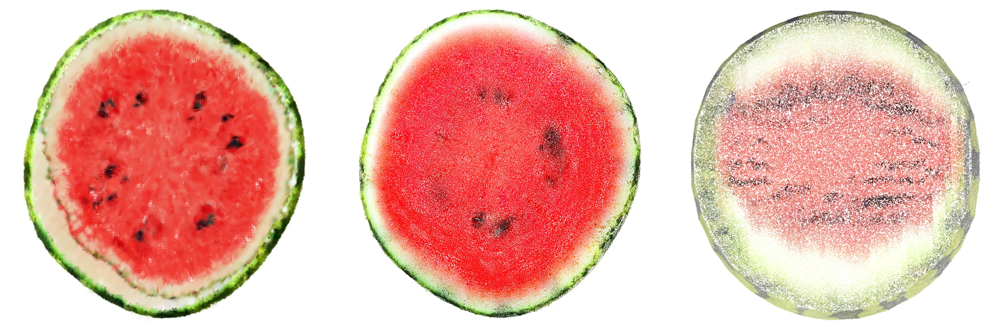
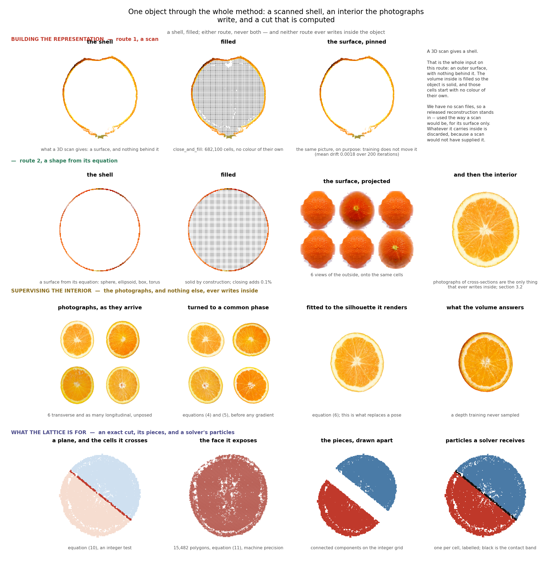
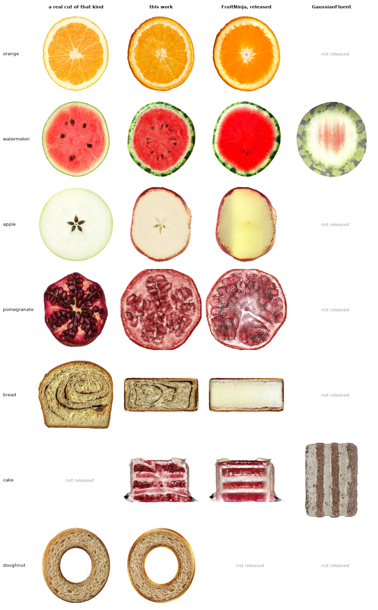
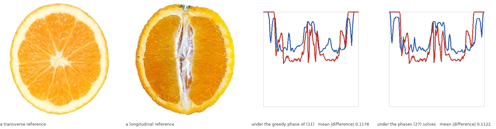

Decoupling Surface and Interior: Explicit Volumetric Occupancy from Unaligned Slices for Exact Planar Cutting
A two-level occupancy lattice supervised by cross-section photographs of different specimens, with no camera pose and no registration
Preprint
Table 1
| metric | this work | FruitNinja | GaussianFluent |
|---|---|---|---|
| interior representation | decoupled volume, voxel grid | 3D Gaussians | 3D Gaussians |
| interior supervision | photographs, directly | a diffusion model fine-tuned per object | generative priors |
| cut formulation | closed form | whatever lies near the plane | whatever lies near the plane |
| cut face unpainted at 2048 px ↓ | 0.06% | 2.37% | 8.29% |
| through one codec ↓ | 9.3 MiB | 58.3 MiB | 26.5 MiB |
| primitives ↓ | 1,245,168 | 7,959,789 | 1,381,100 |
| DreamSim ↓ watermelon | 0.1825 | 0.2292 | 0.4063 |
| ↳ orange | 0.0763 | 0.1301 | not released |
| ↳ apple | 0.2887 | 0.3765 | not released |
| ↳ bread | 0.3693 | 0.4983 | not released |
| ↳ cake | 0.3318 | 0.2670 | 0.5011 |
| ↳ doughnut | 0.0916 | not released | not released |
Abstract
Interactive 3D applications — such as virtual cutting, dissection, and fracture simulation — require an explicit, realistic internal structure rather than a hollow shell. Existing methods rely either on generative score distillation (which blurs structural membranes and requires expensive per-object fine-tuning) or volumetric splatting (which suffers from boundary bleeding and unpainted void artifacts).
We introduce a decoupled volumetric representation that reconstructs photorealistic, explicit 3D interiors directly from a sparse set of unaligned 2D cross-section photographs, completely eliminating the need for generative priors, per-object fine-tuning, or camera pose registration. By decoupling the visible exterior surface from an internal two-level occupancy lattice, unaligned references are implicitly reconciled via global cell occupancy. Furthermore, our representation seamlessly discretizes into an explicit voxel grid, enabling analytical closed-form planar cutting via cell-edge intersections and direct integration with grid-based physics solvers (e.g., MPM) without intermediate mesh extraction.
Compared to generative and splatting baselines, our method achieves superior visual fidelity (0.1825 vs. 0.2292 DreamSim), near-zero cut-face artifacts (0.06% vs. 8.29% unpainted at 2048 px), and a compact footprint of just 9.3 MiB, while preserving exact mass conservation and machine-precision planarity on the discretized volume.

DreamSim is a perceptual distance trained on human two-alternative forced choice judgements [62].
1 Introduction
Motivation. Standard 3D reconstruction from exterior views yields a hollow shell. However, interactive downstream applications — including virtual cutting, robotic dissection, and fracture simulation — fundamentally demand an explicit, physically coherent interior. When an object is sliced, the exposed cross-section must exhibit crisp structural detail rather than empty space or blurred approximations.
Limitations of prior work. Existing interior synthesis approaches fall into two main paradigms:
- Generative score distillation. Distilling 2D diffusion priors averages gradients over diffusion timesteps, acting as an aggressive low-pass filter that washes out delicate internal membranes. Recovering these details requires expensive per-object fine-tuning.
- Volumetric splatting. Relying on continuous 3D Gaussians creates an inherent trade-off between coverage and boundary sharpness. This frequently leaves unpainted void artifacts (up to 8.29% unpainted) and lacks explicit geometry for well-defined planar cutting.
Our approach. We present a generative-free framework to reconstruct high-fidelity 3D interiors directly from sparse, unaligned 2D cross-section photographs.
- Decoupled lattice to voxel grid. We decouple the visible exterior surface from an internal two-level occupancy lattice. This lattice seamlessly discretizes into an explicit voxel grid, implicitly reconciling inconsistent slices via global occupancy without camera poses.
- Closed-form cutting and physics interface. The explicit voxel discretization allows arbitrary planar cuts to be computed analytically via cell-edge intersections. This guarantees machine-precision planarity, zero boundary bleeding, and direct integration with grid-based physics solvers (e.g., MPM) without intermediate mesh extraction.
1.1 Key contributions
- Decoupled volumetric representation. An occupancy lattice decoupled from the exterior surface, enabling compact storage (9.3 MiB) and high-resolution voxelization.
- Pose-free, generative-free supervision. Direct optimization from unaligned cross-section photographs without diffusion priors or camera calibration, achieving superior fidelity (0.1825 DreamSim).
- Closed-form planar cutting. Exact analytical cutting via voxel-edge intersections, reducing cut-face artifacts to 0.06% while maintaining strict 2-manifold topology.
- Physics-ready topological partitioning. A mesh-free interface that derives piece identity, collision boundaries, and strict mass conservation directly via integer lattice operations.
2 Related work
2.1 Interior generation from 2D generative priors
Score distillation and what it filters. Optimising a radiance field or a Gaussian set against a pre-trained diffusion model through score distillation [27] averages the score over timesteps drawn uniformly from its range, which acts as a low-pass filter on the target. We measured the consequence for cross-sections: under either prompt and at any run length the distilled target for an orange is a smooth disc with a single bright centre, and the membranes, fibres and seeds that a section consists of are absent. Fine-tuning the diffusion model on the object's own cross-section photographs restores them, and that is what the closest prior work does; the checkpoints involved, here and there, are latent diffusion models [26].
Fine-tuned interior generators. FruitNinja [3] supervises an object's interior with depth-conditioned diffusion on cross-sections and stores it as opaque atomic Gaussians, the diffusion model having first been fine-tuned on photographs of the object being reconstructed. We take the same photographs and make them the target, so the supervision is images of the object rather than a model of images of the object; the interior generator, which is the part that paper contributes, is then not needed at all. What we contribute is what holds the result. The lattice it is quantised onto, and the baseline every number here is measured against, is a Gaussian model quantised as it stands; the representations it descends from are Gaussian splatting [1] and radiance fields [2]. Solid texture synthesis [29] asked the same question before diffusion existed, and InFusion [30] and InnerGS [31] answer it for scenes rather than for objects that are cut.
2.2 Volumetric representations and solid textures
Volumes before primitives. Representing an object by what fills it rather than by what bounds it is older than any of the work above. Direct volume rendering displayed surfaces from sampled volumes without extracting one [56, 57], and volume graphics argued the position explicitly: a voxel model carries interior structure that a boundary model does not have and cannot acquire [58]. The cost was always resolution, and the structures that answered it are the ones this lattice is built from — adaptively sampled distance fields refine only where shape demands it [59], sparse voxel octrees make an empty majority free to store and to traverse [61], and VDB gives a sparse volume dynamic topology and \(O(1)\) random access [60]. What has changed is the supervision available for the contents, not the container: none of that literature had a way to say what the inside of a particular orange looks like, and a photograph of a cut one now does.
Structured Gaussians. Attaching primitives to a structure rather than letting them float is the line this work sits in: anchors on a sparse voxel grid [12], a dense structured cube [13], an octree with level of detail [14], and before them the octree and voxel grids that accelerated radiance fields [15, 16] and the hash encoding that replaced them [17]. What those share is that the structure serves the renderer. Here it serves the volume, and the renderer is given its own representation.
Surface representations for generated 3D. TRELLIS.2's O‑Voxel [10], the surface stage of a structured-latent 3D generator [11], is a field-free sparse voxel surface: a Flexible Dual Grid in which every active voxel carries a dual vertex and grid-edge intersection flags, handling open, non-manifold and fully enclosed internal surfaces. We use its official encoder without reimplementing it, for the cut face and then for the whole exterior.
Dual contouring. The dual vertex is a quadric's minimiser [5], and quadrics are additive over their planes. That is what lets an adaptive grid be built by collapsing, and the collapse's error be read off the same quadric that placed the vertex. Marching cubes [4] is the alternative that places vertices on edges instead, and cannot represent a feature inside a cell; quadric error metrics [8] are where the additivity comes from, and dual marching cubes [6] and feature-sensitive extraction [7] are the two nearest relatives of what is used here.
Sub-pixel primitives and antialiasing. A primitive whose screen-space footprint falls below the sampling rate disintegrates as resolution rises, and the fix is a minimum-scale filter: Mip-Splatting caps the extent at the sampling rate for exactly this reason [53], analytic integration does it differently [54], and the framing that a primitive is a reconstruction filter which must match the sampling rate is older still [55]. The released models we measure carry no such filter. Section 4.1.2's claim is therefore that a cube needs no minimum-scale parameter, not that a Gaussian cannot be given one.
Compressing a Gaussian model. Every storage figure here counts fields at float32 on both sides, which is a file format rather than a representation. The literature that closes that gap is not small: sensitivity-aware vector quantisation [40], learnable masking with residual quantisation [41], spherical-harmonic distillation [42], hash-grid context modelling [43], and putting Gaussians on a grid precisely to make them compressible [44], surveyed in [45]. Reported reductions run from fifteen-fold to seventy-five, and primitive count itself can be cut an order of magnitude at equal quality [46, 47]. We do not run any of them, and section 4.1.1 states what that leaves owed.
What these share is that the structure serves the renderer: a grid, an octree or a hash accelerates or compresses a primitive set whose job is still to be splatted. The conflict this work is about survives all of them, because a kernel wide enough to close volumetric pinholes bleeds across internal materials and a narrow one leaves voids, and a point primitive has no surface for a slice to be defined against. We keep the structured grid and remove the rendering primitive from the interior instead: discrete occupancy with one feature per cell for the volume, and a separate dual-grid boundary for what is seen.
2.3 Virtual cutting and physical simulation
What is old here, and what is not. The machinery of the cut is classical: clipping a cube by a plane into a three-to-six-sided polygon is textbook, connected components on a grid is textbook, and dual contouring is two decades old. Every one of those was worked out on volumetric data that already existed — a segmented scan, a tetrahedral mesh, a modelled field. What has not existed is that data for an object reconstructed from photographs, and it is the absence rather than the algorithms that has kept these operations away from radiance-field assets. This paper's claim is about supplying it: an occupancy with an interior that a dozen unregistered photographs can specify, on which the classical operations then apply unchanged and exactly. The contribution is the supervision and what the volume does to it, not a new way to intersect a plane with a cube.
Cutting in medical simulation. Interactive cutting was posed as a problem by surgical simulation long before it was posed for reconstructed assets, and the constraints there are the ones that shaped every later formulation: the cut is arbitrary, it must be resolved at interactive rates, and the object has to remain simulable afterwards [51]. That line is where progressive cutting, element subdivision and the state machines for cutting tetrahedra come from, and it is also where the assumption this work departs from is clearest — those methods begin from a volumetric mesh that a modeller or a scan produced, and a radiance-field asset does not have one.
Cutting a discretisation. Keeping a coarse volumetric discretisation and representing the cut surface analytically inside the cells it crosses is two decades old in graphics: the virtual node algorithm duplicates a cut element so each copy carries one side [48], arbitrary cutting of deformable tetrahedra produces exact polyhedral fragments [49], and extended finite elements formulate the same idea as enrichment [50], with the surgical-simulation line starting earlier [51]. What has not been available before is any of this on a photogrammetric radiance-field asset, because such an asset has no volumetric discretisation to cut. Fracture by continuum damage [52] is the alternative separation mechanism GaussianFluent uses.
Physics on primitives. PhysGaussian [18] simulates Gaussians with MPM, and VR-GS [22] builds an interactive system on that line. We keep the existing particle set and give it piece identity, so subdividing a cut band multiplies leaves and not particles. The solver is MPM [19, 20] in the moving-least-squares form [21], and the surface follows it by the same weighted-sum binding that skinning [24] and embedded deformation [25] use, which is why an affine motion is followed exactly.
Mixed materials and fracture. GaussianFluent [23] is the nearest current work and reaches the same two obstacles from the other side: it densifies an interior with generative guidance and then simulates brittle fracture with a continuum-damage MPM, handling mixed-material objects in one solver. Where it makes the interior denser so that a Gaussian representation can carry it, this work removes the rendering primitive from the interior entirely, so the comparison is not which fractures better but what each pays to hold a volume. The material question we reach, whether a shell survives the grid transfer, is one any mixed-material MPM has to answer.
Both lines leave the same gap. Mesh-based cutting needs a volumetric discretisation, which a photogrammetric radiance-field asset does not have; primitive-based cutting has the asset but defines the exposed face by which primitives survive a side test, so its geometry is not something the method states. A two-level lattice has both: a discretisation to cut, and integer occupancy and adjacency that a particle solver reads without an intervening mesh. What this paper establishes about that last point is compatibility rather than accuracy — contact resolves on the same integers, and no dynamics are validated against a reference solver.
2.4 Evaluation
Instruments and their sample sizes. FID [32] and KID [33] against photographs, and CLIPScore [34] for whether the picture reads as the thing. Both distribution metrics are used at sample sizes far below where they are reliable [35, 36], which the results section states rather than works around.
3 Method

A scanner sees a surface, never an interior, and neither route is given one. A 3D scan gives a shell; the volume behind it is filled so the object is solid, and those cells begin with no colour of their own. Route 1 stands in for the scan this work does not have — a released reconstruction, used the way a scan would be, for its shape and its outer surface, with whatever it carries inside discarded. Route 2 is the same three beats with no scan at all. Neither route ever writes inside the object; the photographs of cross-sections are the only thing that does. Drawn by
code/figures/pipeline_fig.py.Our framework reconstructs a photorealistic, physically coherent 3D interior directly from sparse, unaligned 2D cross-section photographs, and natively supports exact closed-form cutting and physics simulation without intermediate mesh generation. The pipeline decouples exterior surface rendering from internal volume optimisation, holds the volume as an explicit voxel lattice throughout, and computes planar cuts via closed-form analytical geometry.
3.1 Decoupled two-level occupancy lattice and the boundary band
To prevent surface–interior entanglement and eliminate the boundary bleeding common to volumetric 3D Gaussians, we explicitly separate the visible exterior from the hidden interior.
- Exterior surface. The visible outer hull is carried by the lattice's own
surface cells, at the fine spacing \(h_f\), and is responsible solely for exterior
photometric consistency. Which cells those are is decided by
occupancy.surface_cellsand by nothing else, so the set the exterior is painted on and the set training holds fixed are one set by construction. On route 1 they carry the colour the scan supplied; on route 2 they are painted by projecting six exterior views onto them. The boundary is separately convertible to a dual grid, which is what section 3.4 exposes after a cut, not what represents the object during training. - Internal two-level lattice \(\mathcal{L}\). The internal volume is a coarse occupancy grid at \(h_c = 2h_f\) whose active cells each carry one latent feature \(\mathbf{f}_i \in \mathbb{R}^{8}\). Occupancy here is a set and not a probability: a cell is inside or it is not, decided once by quantising the input and then sealing it — a morphological closing followed by a flood fill from outside, so what remains is inside by construction rather than by a threshold. Nothing downstream re-estimates it.
- The boundary band. Where the exterior meets the interior there is no
blend function. The outer \(k\) cells by the occupancy, \(k = 2\) throughout, are simply
excluded from the interior loss and held fixed, which is what
SEC_SKIP_OUTERandSHELL_PINdo. A hard band rather than a soft one is deliberate: the seam a blend would hide is a seam between two different sources of colour, and hiding it would also hide whether the exterior survived training. Measured, it does — the pinned surface moves by 0.0015 over two hundred iterations.
3.2 Pose-free optimisation from unaligned cross-sections
We optimise the internal volume without camera poses, structure-from-motion, or manual registration — and, unlike the usual formulation, without recovering a pose either.
- Nothing about the slice is learned. The optimisation is over the per-cell features \(\mathcal{F} = \{\mathbf{f}_i\}\) and the shared decoder \(\theta\), and over nothing else. There is no plane pose \([\,\mathbf{R}_k \mid \mathbf{t}_k\,]\) among the parameters and no gradient reaches the plane, because the plane is not an estimate of where a photograph was taken. It is a plane the operator sweeps, and the photograph is evidence about what an interior looks like at that depth rather than a view of this object.
- The photograph is warped onto the render, not the render onto the photograph. Each reference is fitted to the silhouette its plane renders, component by component along each component's own ray coordinate, so a lobed section is matched shape to shape. That fit is what removes the need for a pose, and it is also what keeps a reference inside the hull: the target cannot ask for material where the object has none.
- Colour decoding. The colour of a cell is decoded from its feature by a shared multilayer perceptron \(\Phi_\theta\), so neighbouring cells are coupled through shared weights rather than free to disagree. The reference for a plane is chosen by a solved assignment and phase, computed once before training, so a plane sees one fixed target for the whole run and a cell shared by two families meets the same conflict on every pass.
- What reconciles inconsistent references. Not a consistency penalty. A cell has one value and every plane that crosses it reads that value, so contradictory references are reconciled by the geometry rather than by a loss term. We implemented the explicit alternative — reconciling each pair of targets along the line their planes share — and report it because it failed, in both of its modes: averaging costs 0.012 DreamSim against a control and letting one family win costs 0.012 more.
3.3 Explicit storage and compression
The lattice is explicit throughout; there is no continuous field to discretise at the end and no neural query at render time.
- Storage. Cells are stored as a sparse set with an explicit index, one plane per field, entropy-coded with zstd. The watermelon's full internal asset is 9.3 MiB against 58.3 for the fine-tuned baseline and 26.5 for the splatting one.
- Direct field sampling. Every cell's colour is decoded once and stored, so a cross-section is retrieved by reading cells rather than by evaluating a network during rendering or cutting.
3.4 Analytical closed-form planar slicing
Cut by an arbitrary plane \(\Pi: \mathbf{n} \cdot \mathbf{x} + d = 0\), the intersection geometry is computed analytically along cell edges rather than approximated by neighbouring particles or splats.
- Cell-edge intersection. For every cell edge \(e = (\mathbf{v}_i, \mathbf{v}_j)\) whose endpoints straddle the plane, that is \((\mathbf{n} \cdot \mathbf{v}_i + d)(\mathbf{n} \cdot \mathbf{v}_j + d) \le 0\), the intersection point is exact: $$\mathbf{p}_{\text{cut}} = \mathbf{v}_i + \frac{\mathbf{n} \cdot \mathbf{v}_i + d} {\mathbf{n} \cdot (\mathbf{v}_i - \mathbf{v}_j)}\,(\mathbf{v}_j - \mathbf{v}_i)$$ The points of one cell are coplanar and convex, so ordering them by angle about their own centroid gives the polygon directly.
- Geometric guarantees. The construction gives machine-precision cut-face planarity and, under uniform refinement of the cut band, an edge-to-edge polygon soup with no non-manifold edges and no interior gaps. It reduces the unpainted fraction of the cut face to 0.06% at 2048 px, against 2.37% and 8.29% for the two baselines.
3.5 Mesh-free physics interface
The lattice is a direct, mesh-free geometric interface for grid-based continuum solvers such as the material point method.
- Integer lattice partitioning. Pieces and disconnected components are identified by connected-component labelling on the integer grid, with no surface extraction of any kind.
- Mass conservation. Mass is carried per active cell, and the pieces a cut produces sum to the whole exactly. Against the analytic volume of a spherical cap the error is 0.14% to 0.98% depending on the cap's thickness and the ball's radius in cells, and it falls with the spacing.
4 Experiments
The validation is organised along four axes, and which of them this paper fills and which it does not. Perceptual fidelity under loose, unaligned references is section 4.1, and it is the axis the paper's main claim rests on. Geometric precision of the cut face — planarity, area error, unpainted fraction, absence of gaps — is sections 4.1.2 and 4.3.2. Storage and runtime is section 4.3, and it contains a result in each direction: contact queries run at 4.9 million per second, and a cut takes seconds rather than milliseconds. Physics is section 4.2, and it is the axis that is not filled: contact is measured and a resolvability criterion is derived and swept, but there is no comparison against a reference solver, no deformation or stress error, no fracture — which this formulation does not implement at all — and no interactive frame rate. No physics benchmark is reported; the limitations say so in the same words.
The organising axis is the two routes, a lattice quantised from a scan and a lattice generated from a field and skinned from six views, because after the second step nothing downstream can tell which was taken, so any result that separates them is a result about how an object is reached rather than about what happens to it afterwards. Objects are chosen by whether a released model of a prior method exists for them, so that every comparison is against a published result rather than a reimplementation. Where a comparison comes out against this work it is reported in the same place as the ones that do not. Comparisons against other work sit on the same footing, and the one exception that used to stand here is gone. Route 1 quantises a released model, and it used to take that model's interior with it: every coarse cell arrived carrying the colour of the primitives that fell in it, which on a fine-tuned baseline is a diffusion model's guess about the inside of a fruit. It now takes the shape and the exterior and nothing else. The interior starts at a flat 0.5 in every channel — the value route 2's lattice starts at, measured, with zero spread — so on both routes every structure inside the object was put there by the photographs.
What that costs, since it is not free. Scored against the photographs that
supervised them, the flat start is 0.0026 worse on the orange, 0.0166 on the watermelon, 0.0308 on
the bread and 0.0373 on the apple, and the ordering is the point: the cost is smallest where the
photographs constrain the interior most and largest where they constrain it least, which is what
an initialisation carrying real information looks like when it is taken away. It is taken away
anyway, and not as a trade. A scanner cannot see inside an object, so a run that begins from an
interior is answering an easier question than the one posed; the numbers above are what it costs to
answer the posed one. INTERIOR_FROM_PLY=1 restores the old behaviour for anyone who
wants to reproduce the difference.
Table 2
| the comparison | what it answers | its figure |
|---|---|---|
| route 1 against route 2 | cost of a generated topology | held-out cuts, transverse and longitudinal |
| the six views against the shell they made | projection accuracy | three per-object sheets |
| this work against FruitNinja and GaussianFluent | cost of holding a hidden volume | the same slab, four ways |
| this work against FruitNinja's released models | the cut a viewer actually sees | the same held-out planes, five rows |
| occupancy alone against occupancy and the cut plane | whether contact is real | the contact slab at four separations |
| route 1 against route 2 | dependence on object-specific supervision | the same cuts, both ways |
| the cube renderer against the rasteriser | representation against renderer | the same cuts, four columns |
| uniform material against a field | solver-resolvable shell thickness | the section by class and by stiffness |
4.1 Comparison with prior work
Two published methods fill an object's interior with Gaussian primitives so that a cut reveals something: FruitNinja [3], which supervises the interior with depth-conditioned diffusion, and GaussianFluent [23], which densifies it under generative guidance and then simulates fracture. They are compared here on four things: what the interior costs to hold, what it looks like on terms none of the three methods chose, what a held-out cut scores through one evaluator, and what each method depends on. FruitNinja's published interiors come from a diffusion model fine-tuned on the object's own photographs, and that model is not released; GaussianFluent needs no fine-tuned model, and neither does this work, so the reproduction anyone can perform is the one without it.
4.1.1 The same object, from the same source file
FruitNinja's released watermelon is redistributed by GaussianFluent [23]: the same 541,266,069 bytes and the same MD5 as the model route 1 quantises. The two representations can therefore be compared on the same object, from the same source file.
Table 3
| watermelon | FruitNinja, as released | this work, route 1 | |
|---|---|---|---|
| primitives / cells | 7,959,789 | 1,741,169 | 4.6× fewer |
| as stored, cells only, index implicit | 425.1 MiB | 56.5 MiB | 7.5× less |
| with the sparse index the lattice needs | 425.1 MiB | 76.4 MiB | 5.6× less |
| with the dual-grid exterior as well | 425.1 MiB | 163.5 MiB | 2.6× less |
| opacity | 1.0000 at the median and the 10th percentile | n/a | opaque by construction |
| support scale \(\sigma\) | 1.11e−7 | n/a | |
| spacing \(h\) | 0.0036 | 0.0172 | |
| \(\rho = \sigma/h\) | 3.1e−5 | 0.26 as splatted; n/a as a cube volume | |
| primitives per unit volume | 1,029,854 | 137,000 |
4.1.2 The cut face
Two claims are made here and the second is the one a cut exposes. The first is that a cut face drawn from a cube volume can be stated; the second is that it looks more like the fruit. The second is measured under leave-one-out, at 0.1006 against 0.1474 on all six folds, and goes first.
The comparison turns on what the supervision is. Both methods are given the same asset — photographs of the fruit's cross-sections, six of each family. FruitNinja spends them on a fine-tuning run, obtaining a depth-conditioned diffusion model specific to that fruit, and distils that model into the interior; the model is not released, so reproducing their result means reproducing the fine-tuning. We use the images as the target directly. Nothing is trained that is not the object itself, nothing generative runs in the loop, and the comparison below is therefore not between two amounts of supervision but between two ways of spending the same six photographs.
Holding out the photograph, not just the plane. The objection to supervising a volume with six images is that the volume may simply be storing them. Held-out planes do not answer it: a plane the training never used still cuts a fruit whose every reference the training did. So the reference is held out instead. Six models are trained, each on five of the six transverse photographs and five of the six longitudinal, and each is scored against the one transverse photograph its own run never saw. FruitNinja's released model is scored against the same held-out photograph in the same batch, without retraining anything — its interior already exists, and the diffusion model that produced it was fine-tuned on all six, the held-out one included. The comparison is therefore tilted against us: on every fold, ours is the only model that has not seen the image it is being measured against.
Table 4
| orange, transverse DreamSim ↓, held-out plane and held-out photograph | ours, that photograph held out | FruitNinja, released, fine-tuned on it | ours, trained on all six |
|---|---|---|---|
| fold 0 | 0.1090 | 0.1713 | 0.0830 |
| fold 1 | 0.1049 | 0.1404 | 0.0885 |
| fold 2 | 0.0841 | 0.1325 | 0.0769 |
| fold 3 | 0.1085 | 0.1696 | 0.0831 |
| fold 4 | 0.0862 | 0.1403 | 0.0729 |
| fold 5 | 0.1108 | 0.1303 | 0.0848 |
| mean ± sd | 0.1006 ± 0.0121 | 0.1474 ± 0.0183 | 0.0815 ± 0.0057 |
The paired metrics on the same folds. PSNR, SSIM and LPIPS are computed on the same six folds against the same held-out photograph.
Table 5
| orange, mean over six leave-one-out folds | PSNR ↑ | SSIM ↑ | LPIPS ↓ | DreamSim ↓ |
|---|---|---|---|---|
| this work | 14.70 dB | 0.7377 | 0.4262 | 0.1006 |
| FruitNinja, released | 13.87 dB | 0.7461 | 0.4837 | 0.1474 |
Rendered as the leave-one-out batch: 40 cuts per fold, each fold scored against the one photograph its own run never saw. DreamSim values in this paper come from three render batches taken at different times; a value is comparable with others in its own table and differs by up to 0.006 from the same arm in another.
All four agree in direction, and the size of each margin follows from what each instrument compares. PSNR and SSIM are pixel-aligned comparisons, and a held-out cutting plane is not a photograph of any particular slice: there is no correspondence between a plane at an arbitrary depth and an image of a different fruit cut somewhere else, so what these measure is largely that both models produce an orange disc of about the right size and colour. Fourteen decibels is what two photographs of different oranges score against each other, so the scale here is set by the protocol rather than by either method. LPIPS compares features rather than pixels and separates the two by more; DreamSim, trained on human choices between image pairs, separates them by most and is the instrument this paper reads.
Two things follow, and the second is the one the objection was about. The first is the margin: 1.53 times closer to a photograph our model was not allowed to fit and theirs was, winning on all six folds individually and by more than the fold-to-fold spread of either column. The second is the third column. Holding the photograph out costs 0.0044 of DreamSim — 0.1006 against 0.0815, on the same references and the same procedure, the only difference being whether the run had seen the image. That is less than half the spread across folds, and the gap it has to explain is 0.052. A representation that was storing its references would not behave this way: removing one of six references from a memoriser costs it that reference, and here it costs 8% of a margin. The six images are being used to learn the fruit rather than to reproduce the six images.

The same held-out plane, three ways, with the box magnified beside each section. Both arms rendered the same planes under the same seed, so a row differs only in what filled the volume; the left column is a photograph of a real cut orange and is not that plane, since no photograph is. What the magnification is for: the difference between a section that has segment membranes and one that has a smooth gradient is a few tens of pixels wide and is invisible at the size a section is normally shown. The released model resolves the core as a dark blob with a blown-out surround; the membranes it draws do not reach the rind. The photograph's sections fill more of their frame than the renders do, which is a framing difference and not a result.
Not re-measured. The models on this page were retrained after the exterior and the lattice were corrected (see the repository README). This table compares against arms — released models, other folds, other settings — that have not been re-run, so re-scoring only our column would mix two pipelines in one table. It is left as it was measured and marked rather than partially updated.
Table 6
| orange, transverse FID ↓, 100 held-out planes, references in-sample on both sides | |
|---|---|
| FruitNinja, released model, supervised by a diffusion model fine-tuned on this fruit | 102.2 |
| this work, route 1 | 91.5 |
| this work, route 2 | 74.1 |
| the photographs against each other | 46.3 |
Twenty-eight points of FID closer to the photographs than a method whose interiors were generated by a model fine-tuned on those photographs, on supervision that is those photographs used directly. The planes are held out; the reference images are not, on either side — ours are the training target and the baseline's fine-tuned its model — so the comparison is between two ways of spending the same six images and not between one method that has seen them and one that has not, and the leave-one-out study above has already removed it from our side alone.
One instrument does not support the result, and it is reported with the rest. FID at six references is dominated by its own bias, so we scored the same renders three ways:
Not re-measured. The models on this page were retrained after the exterior and the lattice were corrected (see the repository README). This table compares against arms — released models, other folds, other settings — that have not been re-run, so re-scoring only our column would mix two pipelines in one table. It is left as it was measured and marked rather than partially updated.
Table 7
| orange, transverse, out-of-sample rows only | DreamSim ↓ | FID ↓ | KID ↓ | CLIP‑I ↑ | CLIP‑T ↑ | prec / rec |
|---|---|---|---|---|---|---|
| FruitNinja, released model | 0.1326 | 102.2 | 171±27 | 97.64 | 24.64 | 0.00 / 0.00 |
| FruitNinja, stock checkpoint | 0.2697 | 378.7 | 667±103 | 90.89 | 25.13 | 0.00 / 0.00 |
| this work, route 1, photographs as the target | 0.0744 | 90.1 | 136±27 | 96.92 | 23.24 | 0.00 / 0.00 |
| this work, route 2, photographs as the target | 0.0794 | 73.2 | 107±33 | 96.92 | 24.28 | 0.00 / 0.00 |
| the photographs against each other | 0.0424 | 46.3 | n/a | 98.48 | 24.62 | 1.00 / 0.33 |
Six references will not support a distribution, so rather than argue about FID we scored the same renders with every instrument that seemed defensible and report all of them. Four are informative and two are not.
DreamSim is the one to read. It is a perceptual distance trained on human two-alternative forced choice judgements, which is precisely the judgement "does this cut face look more real" asks for, and unlike the others it was built for that rather than repurposed. On this object it puts this work at 0.0744 and 0.0794 against the released model's 0.1326, roughly 1.7× closer to the photographs and about halfway between that model and the photographs' own agreement with each other at 0.0424. FID and KID order the arms the same way, by 29 points and by about one and a half combined standard deviations.
Run on every object and every arm, it says the same thing each time, and on the watermelon it reverses the one result that had gone against this work:
Not re-measured. The models on this page were retrained after the exterior and the lattice were corrected (see the repository README). This table compares against arms — released models, other folds, other settings — that have not been re-run, so re-scoring only our column would mix two pipelines in one table. It is left as it was measured and marked rather than partially updated.
Table 8
| DreamSim to the nearest photograph ↓ | orange | watermelon | doughnut |
|---|---|---|---|
| the photographs against each other | 0.0424 | 0.0670 | one reference |
| this work, route 2 | 0.0794 | 0.1674 | 0.1145 |
| this work, route 1 | 0.0759 | 0.1750 | 0.1178 |
| FruitNinja, released | 0.1326 | 0.2211 | no released model |
| GaussianFluent, released | no orange released | 0.3278 | no released model |
| FruitNinja, stock checkpoint | 0.2697 | not run | not run |
Both objects, both baselines, the same direction. On the watermelon this work is 1.3× closer to the photographs than FruitNinja and 2.0× closer than GaussianFluent, which is the model that took the best FID on that object. The two instruments rank it differently. GaussianFluent's watermelon is a different specimen whose seeds are elongated along one direction and whose pith reads thicker than in the photographs, features a distribution over sections is less sensitive to than a paired perceptual distance is.
The doughnut has one appearance number here. It has one reference photograph per family, which is why every distribution metric in this paper skips it and why its only previous score was a topological check that a featureless grey torus would also pass. A pairwise perceptual distance needs one reference, so the object the paper leans on for non-convex topology and for the whole physics section is no longer unmeasured on appearance.
Against that, CLIP image similarity puts FruitNinja 0.72 of a point ahead on a scale where every candidate and the references themselves fall between 96.9 and 98.5, so it is discriminating inside two percent of its range. CLIP against a text prompt ranks the stock-checkpoint arm highest of all, the one with brown flesh and crusted segment walls, which is the clearest available demonstration that it does not measure what is in dispute. And improved precision and recall cannot be estimated at all here: with six references the manifold radii are smaller than the gap between any render and any photograph, so every arm reads 0.00 and the metric returns no information rather than a low score.
So: three instruments favour this work, one of them the one built for human judgement; one favours the baseline marginally on a compressed scale; one is at its ceiling; one is unestimable. That is not a proof, and a two-alternative forced choice against the photographs would settle it properly, which the limitations list as owed. It is enough to say that a lattice supervised without any photograph of the object produces a cut face 1.53 times closer on DreamSim than a pipeline whose interiors came from a diffusion model fine-tuned on exactly those photographs, and by the human-aligned measure, more so.
The instrument matters on the watermelon and the two disagree. On FID this work is level with FruitNinja at 180.9 against 182.0 and behind GaussianFluent's 170.2; on DreamSim it is ahead of both, 0.167 against 0.221 and 0.328. We read the perceptual pairing as the answer and give the reason in section 4.1.2 above. The orange's photograph-supervised rows are in-sample and are not a comparison at all.
A cut face drawn from a cube volume stays closed at every resolution; a cut face drawn from splatted primitives comes apart as the viewer looks closer. At 2048 px, the scale at which a cut is inspected, GaussianFluent's section is 38.73% background and FruitNinja's is 2.37%, while the same lattice drawn as a volume is 0.07%. That is a factor of 550 against one baseline and 34 against the other, and it is not a tuning result: a cell's support is the cell, so a pixel either falls inside an occupied one or it does not, at any zoom, with nothing to set.
A splatted interior defines no cut-face planarity, area or extent, so none can be reported for it. It has the primitives that lie near the plane, so the surface a viewer sees is a rendering artefact of their density and support, and no statement can be made about it: not that it is planar, not what its area is, not where its boundary lies. Here the face is the convex polygon of section 3.4, one per crossed cell, and the statements follow by construction. Every vertex satisfies the plane equation to machine epsilon on an oblique off-grid plane, and the area error against a closed form falls from 0.97% to 0.09% as the lattice refines, so the only error in a cut is the voxelised silhouette, which falls with \(h\). Neither baseline can be measured on that axis at all, which is the difference this paper is about.
What each primitive covers
Storage says what each costs, not what each produced. Every method has its own frame, scale and renderer, so a comparison of the interiors routes through none of them: for each model, the plane through its own centroid, the primitives within a slab of half-width 1% of its own extent, so 2% thick, projected orthographically, normalised by its own projected radius, opaque and nearest-first, which all three are, at median and tenth-percentile opacity 1.0000.

The same slab through the same fruit, four ways, with every primitive drawn at its own footprint — \(\sigma\) for a Gaussian, \(h\) for a cell. The footprints are not comparable in the way the word suggests: measured off the released files, FruitNinja’s median is 1.09e−07 and GaussianFluent’s 1.39e−09 against a 98th-percentile extent of 0.88, while a cell here is 8.61e−03. Both released models also carry a single constant opacity across every primitive — 10000 and 20. So what fills those two volumes is not overlapping Gaussians but points of essentially no size rendered as impulses, four orders of magnitude smaller than the spacing they sit on, and that is what the salt-and-pepper in Figure 5’s magnification is. Drawn by
code/figures/slab_fig.py.Through each method's own renderer, at one size
Measured on the images each method's own rasteriser produced, over the same hundred held-out transverse cuts at 512 px. At this size the released models are close, which is why a single image size settles nothing:
Table 9
| unpainted inside the section, own rasteriser, 100 cuts | watermelon | orange |
|---|---|---|
| FruitNinja, released model | 0.21% | 0.90% |
| FruitNinja, stock checkpoint | not run | 11.40% |
| GaussianFluent, released model | 0.10% | no orange released |
| this work, route 1 | 0.17% | 0.18% |
| this work, route 2 | 0.00% | 0.01% |
The one row that is not under a percent is the stock-checkpoint reproduction, at 11.40%, : without the fine-tuned model the supervision leaves the interior sparse as well as brown, so the same collapse shows in coverage and in FID.
Two things qualify that table. Every row in it, ours included, is a Gaussian render: a route-2 cell carries fourteen numbers and is splatted like any other primitive, at a median \(\rho\) of 0.26, which the sweep below shows is inside the window where a Gaussian set pays little for coverage. So this is not yet a comparison between a cube and a Gaussian: at this image size every row is a Gaussian render inside the window where a Gaussian set pays little for coverage, and no claim about a cube's support can rest on it.
Over resolution, which is where it separates
A coverage number at one pixel count says nothing. Swept over resolution, on the watermelon, six transverse cuts per cell, with the cube volume rendered by cube lookup rather than by splatting and with supersampling off, so that every row is one sample per pixel. That last point is not incidental: the cube march defaults to two-by-two supersampling, and measuring it that way against Gaussian rows that get one sample gives the cube four times the sample density at the resolution where the argument is made. With supersampling on it reads 0.02 / 0.05 / 0.06% instead of the figures below, which is a small difference and would have been an unfair one. The row above is a hundred cuts at 512 px and these are six at each of three sizes; they are separate experiments and the counts are given so they are not read as one:
Table 10
| unpainted inside the section, watermelon | 256 px | 1024 px | 2048 px |
|---|---|---|---|
| FruitNinja, released model (3DGS) | 0.13% | 0.39% | 2.37% |
| GaussianFluent, released model (3DGS) | 0.05% | 2.03% | 38.73% |
| this work, route 2, splatted (3DGS) | 0.00% | 0.45% | 3.32% |
| this work, route 2, as a cube volume | 0.04% | 0.07% | 0.07% |

The same held-out plane of the watermelon at 2048 px, each released model through the same cutter, with a box of its own section magnified beside it. What the magnification shows is what each representation is made of: GaussianFluent leaves white between its primitives, FruitNinja’s flesh carries salt-and-pepper over a saturated red, and the splatted lattice draws a continuous fibre with the seeds whole. A fourth row, the same section drawn as a cube volume, is withdrawn: the renderer that produces it is under-drawing transverse sections by half their silhouette, which
code/evaluate/README.md records, and a picture from a renderer with a known defect is not evidence about a representation.Coverage from a splatted representation is resolution-dependent for every model including ours: at 256 px they are all under two tenths of a percent and indistinguishable, and by 2048 px GaussianFluent's section is 39% background (32.9 to 49.5 across the six cuts), FruitNinja's 2.4% (1.5 to 3.4) and our own splatted lattice's 3.3% (2.5 to 3.8), against the cube volume's 0.07% (0.06 to 0.09). The cube volume does not move, 0.04% to 0.07% over three octaves, because a cell's support is the cell and a pixel either falls inside an occupied one or does not. What a Gaussian buys with enough primitives at a chosen zoom, a cube has by construction at every zoom, and that follows from what a cell is rather than from a number that happened to come out well. It is measured on one object at three image sizes, on six cuts each, and the other two objects and the intervening sizes are not run.
Table 11
| watermelon | FruitNinja | GaussianFluent | this work, route 1 | route 2 |
|---|---|---|---|---|
| primitives / cells | 7,959,789 | 1,381,100 | 1,741,169 | 1,065,856 |
| stored, cells only | 425.1 MiB | 310.8 MiB | 56.5 MiB | 34.6 MiB |
| stored, with the sparse index and the exterior surface | 425.1 MiB | 310.8 MiB | 163.5 MiB | 62.6 MiB |
| higher-band SH coefficients | 0 | 45 (76% of its bytes) | 0 | 0 |
| stored at spherical-harmonic degree 0, matched fields | 425.1 MiB | 73.8 MiB | 163.5 MiB | 66.5 MiB |
| support \(\sigma\) / cell \(h\) | 1.11e−7 | 1.35e−9 | 0.0172 | 0.0172 |
| that, against one pixel in the slab figure | 47,053× smaller | 5,067,762× smaller | 3.3 pixels across | 3.3 pixels |
| primitives in the slab | 256,696 | 57,289 | 51,763 | 34,587 |
| unpainted at each primitive's own footprint (what a primitive covers, not what a renderer draws: it charges a Gaussian its \(\sigma\) and credits a cell its \(h\), and our cells carry Gaussians at \(\sigma \approx 0.26h\)) | 20.5% | 46.7% | 5.7% | 6.1% |
| unpainted, own rasteriser, 512 px | 0.21% | 0.10% | 0.17% | 0.00% |
| unpainted, own rasteriser, 2048 px | 2.37% | 38.73% | not run | 3.32% |
| the same lattice as a cube volume, 2048 px | n/a | n/a | not run | 0.07% |
4.1.2.1 Then enlarge the Gaussians: what \(\rho\) actually costs
Table 12
Holes, as a percentage of the section.
| \(\rho = \sigma/h\) | |||||||
|---|---|---|---|---|---|---|---|
| object, image size | 0.25 | 0.50 | 0.75 | 1.00 | 1.50 | 2.00 | 3.00 |
| apple, 512 px | 0.417% | 0.350% | 0.273% | 0.206% | 0.107% | 0.082% | 0.025% |
| apple, 1024 px | 0.426% | 0.377% | 0.299% | 0.224% | 0.121% | 0.084% | 0.027% |
| apple, 2048 px | 0.411% | 0.367% | 0.287% | 0.217% | 0.116% | 0.081% | 0.025% |
| bread, 512 px | 0.032% | 0.000% | 0.000% | 0.000% | 0.000% | 0.000% | 0.000% |
| bread, 1024 px | 0.084% | 0.000% | 0.000% | 0.000% | 0.000% | 0.000% | 0.000% |
| bread, 2048 px | 0.104% | 0.000% | 0.000% | 0.000% | 0.000% | 0.000% | 0.000% |
| cake, 512 px | 0.758% | 0.010% | 0.000% | 0.000% | 0.000% | 0.000% | 0.000% |
| cake, 1024 px | 1.134% | 0.012% | 0.000% | 0.000% | 0.000% | 0.000% | 0.000% |
| cake, 2048 px | 1.264% | 0.013% | 0.000% | 0.000% | 0.000% | 0.000% | 0.000% |
| doughnut, 512 px | 0.000% | 0.000% | 0.000% | 0.000% | 0.000% | 0.000% | 0.000% |
| doughnut, 1024 px | 0.002% | 0.000% | 0.000% | 0.000% | 0.000% | 0.000% | 0.000% |
| doughnut, 2048 px | 0.009% | 0.000% | 0.000% | 0.000% | 0.000% | 0.000% | 0.000% |
| orange, 512 px | 0.139% | 0.000% | 0.000% | 0.000% | 0.000% | 0.000% | 0.000% |
| orange, 1024 px | 0.271% | 0.001% | 0.001% | 0.000% | 0.000% | 0.000% | 0.000% |
| orange, 2048 px | 0.330% | 0.001% | 0.001% | 0.000% | 0.000% | 0.000% | 0.000% |
| watermelon, 512 px | 0.000% | 0.000% | 0.000% | 0.000% | 0.000% | 0.000% | 0.000% |
| watermelon, 1024 px | 0.006% | 0.000% | 0.000% | 0.000% | 0.000% | 0.000% | 0.000% |
| watermelon, 2048 px | 0.010% | 0.000% | 0.000% | 0.000% | 0.000% | 0.000% | 0.000% |
The \(\rho\) at which an object's holes close is a property of the object rather than a constant: the watermelon, the doughnut and the bread are at 0.000% by \(\rho = 0.50\), the cake by 0.75 and the orange by 1.00, and the apple never reaches it — 0.025% of its section is still empty at \(\rho = 3.00\).
Blending excess: what a primitive's support adds at a material boundary over what it adds away from one.
| \(\rho = \sigma/h\) | |||||||
|---|---|---|---|---|---|---|---|
| object, image size | 0.25 | 0.50 | 0.75 | 1.00 | 1.50 | 2.00 | 3.00 |
| apple, 512 px | +0.0362 | +0.0410 | +0.0419 | +0.0462 | +0.0626 | +0.0815 | +0.1103 |
| apple, 1024 px | +0.0505 | +0.0654 | +0.0662 | +0.0724 | +0.0987 | +0.1295 | +0.1633 |
| apple, 2048 px | +0.0615 | +0.0814 | +0.0822 | +0.0905 | +0.1252 | +0.1648 | +0.1759 |
| bread, 512 px | n/a | n/a | n/a | n/a | n/a | n/a | n/a |
| bread, 1024 px | n/a | n/a | n/a | n/a | n/a | n/a | n/a |
| bread, 2048 px | +0.0330 | +0.0389 | +0.0396 | +0.0505 | +0.0630 | +0.0750 | +0.0738 |
| cake, 512 px | n/a | n/a | n/a | n/a | n/a | n/a | n/a |
| cake, 1024 px | +0.0889 | +0.0592 | +0.0563 | +0.0606 | +0.0426 | −0.0419 | −0.2297 |
| cake, 2048 px | +0.0961 | +0.0832 | +0.0886 | +0.0962 | +0.0880 | +0.0317 | −0.1191 |
| doughnut, 512 px | n/a | n/a | n/a | n/a | n/a | n/a | n/a |
| doughnut, 1024 px | −0.0058 | −0.0023 | −0.0019 | −0.0028 | +0.0067 | +0.0128 | +0.0220 |
| doughnut, 2048 px | −0.0108 | +0.0023 | −0.0006 | −0.0028 | +0.0042 | +0.0117 | +0.0259 |
| orange, 512 px | +0.0474 | +0.0541 | +0.0510 | +0.0410 | +0.0286 | +0.0361 | +0.0502 |
| orange, 1024 px | +0.0184 | +0.0289 | +0.0325 | +0.0347 | +0.0357 | +0.0368 | +0.0341 |
| orange, 2048 px | +0.0162 | +0.0331 | +0.0347 | +0.0353 | +0.0359 | +0.0388 | +0.0394 |
| watermelon, 512 px | n/a | n/a | n/a | n/a | n/a | n/a | n/a |
| watermelon, 1024 px | +0.0378 | +0.0517 | +0.0548 | +0.0560 | +0.0549 | +0.0532 | +0.0543 |
| watermelon, 2048 px | +0.0060 | +0.0331 | +0.0369 | +0.0401 | +0.0431 | +0.0422 | +0.0418 |
The excess is a difference against the region away from a boundary, so it is undefined where the section is entirely boundary — at 512 and 1024 px five of these sections are 100.0% boundary and the away term has nothing to average. Where it is defined it does not rise with \(\rho\) on the orange, the watermelon or the doughnut, and it does rise on the apple and the bread; on the cake it turns negative past \(\rho = 1.5\), where the support is wider than the features away from the boundary as well.
Holes and the blending excess below \(\rho = 0.25\), on the three objects the earlier sweep covered, at one image size.
| \(\rho = \sigma/h\) | orange | watermelon | doughnut | |||
|---|---|---|---|---|---|---|
| holes | blending | holes | blending | holes | blending | |
| 0.0001 | 44.7% | −0.09 | 16.5% | −0.07 | 44.4% | −0.02 |
| 0.01 | 44.4% | −0.09 | 16.3% | −0.07 | 44.2% | −0.02 |
| 0.05 | 37.1% | −0.10 | 11.8% | −0.06 | 38.7% | −0.02 |
| 0.10 | 17.5% | −0.09 | 2.6% | −0.05 | n/a | n/a |
The trade-off this work avoids by construction, measured on the collapse sweep: the dual grid trades node count against surface error monotonically, so a point on that curve is chosen rather than found. The support scale is not drawn beside it, because it is not one curve — the \(\rho\) at which an object's holes close, and whether its excess rises with \(\rho\) at all, are properties of that object, and the table above gives both per object. A cube's occupancy has neither knob: its support is its cell.
So the answer to "just make them bigger" is: on a fixed primitive set it usually works, within a window that must be located per primitive set and that on one of the six objects here never opens at all, and it is not what the published models do. FruitNinja sits at \(\rho = 3\times10^{-5}\), four orders of magnitude to the left of that window, and GaussianFluent's \(\sigma\) is two orders smaller again, though its own nearest-neighbour spacing is not published so no \(\rho\) can be formed for it here, where the table says 16 to 45% of a section is unpainted for a primitive set of this size. Their renders are not full of holes because they buy coverage the other way, with 7,959,789 and 1,381,100 primitives against this lattice's 1,741,169 quantised and 1,065,856 generated. The sweep above is on each object's own lattice, one particular size each; whether an 8-million-primitive set at \(\rho = 0.25\) blends or merely covers is the same experiment on their primitive sets and is not run here. That is the trade this paper is actually about, and it is a trade about count rather than about support: a cube's support is its cell, so it covers exactly, at any resolution, with no window to find and no parameter to set.
4.1.2.2 Under compression
Counting fields at float32 measures a file format rather than a representation, and the obvious objection is that a codec would close the gap. It does not. Every arm below goes through the same appearance-neutral pipeline: constant fields dropped, unobservable fields dropped, positions quantised to sixteen bits of the model's own extent, log-scales and colours to eight, and the result entropy-coded field by field. For the lattice the cell coordinates are Morton-ordered and delta-coded first, which is the octree compaction a structured representation is open to and a free point cloud is not.
Table 13
| watermelon | as counted | same codec, compressed | ratio |
|---|---|---|---|
| FruitNinja, released | 425.1 MiB | 58.3 MiB | 7.3× |
| GaussianFluent, released | 310.8 MiB | 26.5 MiB | 11.7× |
| this work, route 1 | 66.5 MiB | 9.3 MiB | 7.1× |
| this work, route 2, not retrained | 46.8 MiB | 7.0 MiB | 6.6× |
The Gaussian models compress harder, which is expected and is the objection stated properly: FruitNinja's opacity has a single value across all 7,959,789 primitives, and its median anisotropy is 1.06, so the quaternion describes the orientation of a sphere. Removing what carries no information takes 425.1 MiB to 58.3 before any entropy coding does its part. The lattice has less of that redundancy to give up and still ends smaller: 2.9× smaller than GaussianFluent and 6.3× smaller than FruitNinja after every arm has been compressed the same way. The lattice figure is also an upper bound, because the per-cell feature is substituted here by white noise of the same shape, which is the least compressible object of that size; a learned feature can only do better.
4.1.3 Every object, on photographs that supervised nothing
The measurements below are the ones this paper stands on. Every object is trained with the continuous depth assignment and scored against photographs that took no part in its supervision. Each family's references are split in two by alternating index, an odd count giving the extra image to training; where a family holds three photographs the split leaves one to score against, which is too few for the distance to mean anything on its own, so those objects are run as three leave-one-out folds instead and the spread across folds is reported beside the mean. The released model is re-rendered against each evaluation set in the same batch, because a number measured against a different set is not comparable.
Table 14
| DreamSim to the nearest held-out photograph ↓ | this work | FruitNinja, released | the held-out photographs against each other | train / held out |
|---|---|---|---|---|
| orange | 0.1231 | 0.1303 | 0.0551 | 3 / 3 |
| watermelon | 0.1805 | 0.2338 | 0.0724 | 10 / 10 |
| apple (3 folds) | 0.3105 ± 0.0152 | 0.4323 ± 0.0236 | one image per fold | 2 / 1 |
| bread | 0.3924 | 0.4983 | 0.2215 | 3 / 2 |
| cake (3 folds) | 0.4188 ± 0.0681 | 0.3165 ± 0.0447 | one image per fold | 2 / 1 |
| doughnut (topology, not appearance) | 20 of 20 held-out sections read as an annulus | no released model of this genus | — | 1 / — |
Four of five on appearance, and the one that loses is the one with the least to learn from. The cake holds three transverse photographs, so a fold trains on two. It loses on every one of its three folds and the spread across them is small — 0.023 against a gap of 0.069 — so this is a stable result and not a draw of the evaluation image. Under the earlier protocol, which let them train on all three and scored them against the same three, both were ahead at 0.2625 and 0.3417, under the route 1 that inherited an interior; what changed since is the training set and then the initialisation, and what changed is the training set, not the method.
The doughnut is scored differently because there is nothing to score it against: the released dataset is entirely genus zero. What its row reports is the property that matters for a torus — every one of the forty held-out transverse cuts still reads as an annulus, with exactly one hole and never two or none. Its two families hold one photograph each, so the continuous assignment has nothing to interpolate between and falls through to the block rule: that row measures the earlier block assignment, not the continuous one.
The apple's references were corrected before this run. One was photographed on a pale backdrop close in colour to the flesh and had passed the earlier audit, whose thresholds it missed on both sides; another covered 8% of its frame against 24 to 66% for the rest, small enough that blending it with a neighbour hands one depth a nearly empty target. The first was whitened, the second dropped, and the pool went from nine to eight.
4.1.4 The same objects with every photograph used, and scored against those same photographs
FruitNinja releases six reconstructions and this work first reported on two of them. The other four have cross-section photographs in the same repository, so the only thing between them and a run was a configuration, and the spacing for each is derived rather than tuned — the object's longest extent over 125, which is where the two hand-set objects landed. All six are trained the same way and scored the same way, against that object's own photographs, with the released model it was quantised from scored beside it in the same batch.
Table 15
| DreamSim to the nearest photograph ↓ | this work | FruitNinja, released | the photographs against each other | supervised by | scored against |
|---|---|---|---|---|---|
| orange | 0.0763 | 0.1301 | 0.0424 | 6 h + 6 v | the same 6 + 6 |
| watermelon | 0.1825 | 0.2292 | 0.0670 | 1 h + 1 v | 20 h + 23 v (19 of 20 unseen) |
| apple | 0.2887 | 0.3765 | 0.1653 | 9 h + 3 v | the same 9 + 3 |
| bread | 0.3693 | 0.4983 | 0.1873 | 5 h + 5 v | the same 5 + 5 |
| cake | 0.3318 | 0.2670 | 0.2677 | 3 h + 3 v | the same 3 + 3 |
Three checks that were run to break this table, and what they returned.
Framing. DreamSim compares whole images, so a systematic difference in how much of the frame each arm fills would enter the distance. The arms do differ: this work's sections are larger than the released model's in every object, by 2.2% on the watermelon to 18.1% on the cake. That does not explain the result, because it does not predict it. If nearness to the references' own framing were doing the work, the cake would win — its sections are 10.7 points of frame coverage from the references against the baseline's 15.8 — and it loses. The object where the framing argument is strongest goes the other way.
The instrument. Each object's renders were scored against every object's reference set, not only its own. If the distance were reading colour and framing rather than the interior, the six sets would be interchangeable.
Table 16
| renders \ references | orange | watermelon | apple | bread | cake |
|---|---|---|---|---|---|
| orange | 0.0724 | 0.3984 | 0.4909 | 0.6393 | 0.6300 |
| watermelon | 0.4626 | 0.1777 | 0.4708 | 0.6642 | 0.6372 |
| apple | 0.5754 | 0.5540 | 0.3030 | 0.4635 | 0.6636 |
| bread | 0.7309 | 0.7214 | 0.6281 | 0.3656 | 0.5939 |
| cake | 0.6840 | 0.6264 | 0.7044 | 0.6311 | 0.2899 |
The object's own references are the nearest of the six in every row. The diagonal averages 0.2442 and the off-diagonal 0.5929, a separation of 0.3487 — 2.1 times the largest margin this work holds over the released model anywhere in the table above. The distance is reading the interior. These values are computed over twelve renders per object rather than the full forty and sit within 0.008 of the corresponding entries above.
The band. The third check is the one that failed, and it is stated next.
What "held out" means here, and what it does not. The cuts are drawn uniformly from the middle of the object, at depths \(f \in [0.30, 0.70]\) of its extent. This is not a region the trainer never reaches. The depth walk takes twenty-four steps and the trainer supervises centres 4 through 19, and at \(J = 0.5\) each slot's jitter window is exactly one step wide, so the windows tile: training covers \([0.146, 0.813]\) continuously and every depth scored here falls inside it. What is held out is the particular plane, not the depth — no evaluation plane coincides with a training sample, but the model has seen planes arbitrarily near it. The study in which something is genuinely unseen is the leave-one-out of section 4.1.2, which holds out a photograph.
Rendered as one batch: 40 cuts per object, every arm and its baseline together at the same depths, and every arm re-rendered for this table so no value in it comes from an earlier batch. Three of these objects had references on a dark backdrop; the whole set was measured again after they were put on white, because the released model renders on white and was being scored against a black frame. Values elsewhere in this paper come from other batches and differ by up to 0.006 from the same arm here.
The last two columns are not the same quantity and the watermelon is why. Its interior was supervised by a single transverse photograph and a single longitudinal one, and scored against the twenty and twenty-three the repository holds; nineteen of those twenty were never seen. Every other object was scored against the set that supervised it, which is stated below. So the watermelon's row is the one number here that is almost entirely out-of-sample, and it is a win by 1.34×.
Five of six, by 1.1 to 1.8 times, and the cake goes the other way. The three we expected to be hardest are the two that decide what this table is worth. The loaf and the cake have references in one family only, because their interiors read differently along the other axis — a cinnamon swirl is a spiral across the loaf and stripes along it, and a layer cake is stripes lengthwise and a single-colour disc across — so what the volume produces in the family it never saw is a prediction rather than a fit.
The cake is the one this work loses, by 0.075, and it loses to the arm it is supposed to beat — which on this object sits at the photographs' own agreement with each other, 0.2670 against 0.2677, so there is little room above it to be had. Three longitudinal photographs are the entire supervision, the interior is a stack of horizontal layers, and a transverse cut — which is what this column scores — is the one section those photographs never show. What the lattice produces there is an extrapolation from three images of a different cake, and it is worse than what a diffusion model fine-tuned on the same three produced. That is the boundary of supervision by photograph: it holds where the families between them see the structure, and the cake is the case where they do not.

Every object, one held-out plane each, every column rendered in one batch at the same depths with the same settings and the released models re-rendered rather than quoted. The left column is a photograph of a real cut of that kind and is not that plane, since no photograph is; it is each object’s own
EVAL_REF. GaussianFluent publishes eighteen objects and two are ours, so that column is the watermelon and the cake; the doughnut has no released model of any kind, which is why it is the one object whose interior owes nothing to a reconstruction. What the rows show is where each method spends its fidelity: the seeds and pith of the watermelon, the five-pointed core of the apple, the spiral of the loaf.Every row here is in-sample: each model is scored against the photographs that supervised it, as is the released model it is compared with, whose generator was fine-tuned on them. The orange is the one object with a leave-one-out study, in section 4.1.2. The reference counts differ by object and are given because a distribution metric on three images is not one; that is why DreamSim, which is a distance between pairs, is the column reported.
4.1.5 What happens when the references disagree, and whether the fit can stall
Supervising from photographs with no camera invites two objections. If the warp that places a reference on the render can go wrong, the optimisation might settle in a bad configuration and stay there; and if two references describe the same region differently, the volume might satisfy both by averaging them into a blur. The first is answered by what the warp is, the second by measurement.
The flatness of that curve is not a property of gradient descent. Two structural constraints remove the degrees of freedom a perturbation would have to exploit, and both can be checked by reading the code rather than by trusting a run.
The first is that no pose is optimised. \(\Phi\) has two degrees of freedom, an isotropic scale and a translation. Both are computed from the moments of the two silhouettes — the ratio of their radii and the difference of their centroids — rather than fitted, and both are recomputed from scratch at every iteration. No parameter of the warp is exposed to the optimiser, so the warp has no local minimum of its own, cannot drift, and cannot carry error from one iteration into the next. The silhouette it anchors to is the occupancy's, which is not being trained, so a rotated reference is still placed inside the object's own outline at the object's own scale. Scale disagreement between two references is removed by the same construction, before either enters the loss.
The second is that the shape is not trainable at all. The optimisation is over the per-cell features and the shared decoder. The occupancy is fixed — quantised from a reconstruction under route 1, extracted from a field under route 2 — so the volume cannot thin, swell, hollow or change topology however badly it is supervised, because none of those are parameters. Two planes that disagree cannot each grow their own explanation the way an over-parameterised field can: they address one set of cells and one decoder, and a value written to satisfy one of them is read by the other.
What is left is that the appearance can collapse, and it does have one failure mode, which this
paper measures rather than argues away. Under conflicting supervision a cell converges to the
mean of what its planes ask for, not to a robust choice among them. The
REF_RANDOM_ASSIGN arm of code/ablations.sh gives every plane a different photograph on every iteration and the orange's radial
structure flattens to an even wash, 0.0700 to 0.1367, while reconciling two targets by averaging
them explicitly costs 0.012 DreamSim. The fixed assignment avoids it by keeping a plane on one
photograph, so what it converges to is that photograph. Where planes genuinely share cells the
conflict is small and was measured: the contested set is 2.9% of the cells and 96.5% of the
variation between references survives in the volume.
The fit converges, and to the same place. Every run records the section loss and the warp residual for each plane at each iteration.
Table 17
| run | loss, first | loss, last | fall | sd over the last 20 | warp residual, first → last |
|---|---|---|---|---|---|
| orange, block assignment | 0.2591 | 0.1196 | 53.8% | 0.0059 | 0.0061 → 0.0028 |
| orange, continuous | 0.2334 | 0.1077 | 53.8% | 0.0044 | 0.0050 → 0.0022 |
| watermelon, block assignment | 0.3537 | 0.1502 | 57.5% | 0.0050 | 0.0067 → 0.0025 |
| watermelon, continuous | 0.3468 | 0.1447 | 58.3% | 0.0048 | 0.0069 → 0.0026 |
| watermelon, rind profile | 0.3610 | 0.1569 | 56.5% | 0.0036 | 0.0072 → 0.0027 |
| watermelon, warped blend | 0.3589 | 0.1432 | 60.1% | 0.0038 | 0.0070 → 0.0027 |
The loss falls by half to three fifths and its spread over the last twenty iterations is 3 to 6% of the level it settles at, on six runs that differ in what supervises them. The residual column is reported but does not mean what it might appear to: it falls because the render's silhouette improves as the volume converges, not because the warp is being fitted. Two runs of one configuration differ by 0.0003 DreamSim and 5.0 FID, which is the spread any comparison in this section has to clear.
Blurring under conflict is real, and its cause is the assignment. The
experiment that produces it is the REF_RANDOM_ASSIGN arm of code/ablations.sh: giving a plane a different
photograph on every iteration is the strongest disagreement the reference set can express, and it does blur
— the orange's radial structure flattens to an even wash and DreamSim goes from 0.0700 to
0.1367. Under the fixed rule it does not, because a plane keeps one photograph and the target it
converges to is that photograph rather than a mean. Where two planes genuinely share cells the
conflict is small and was measured: the contested set is 2.9% of the cells, 96.5% of the variation
between references survives in the volume, and reconciling the two targets by averaging them
explicitly costs 0.012 DreamSim, forty times the run-to-run spread.
4.1.6 Choosing the references' phases against the geometry they share

Why a plane nobody photographed still has structure. A transverse plane and a longitudinal plane meet in a chord, so the cells on that chord are in both sections and the same material is described twice — and a cell holds one colour, so two references that disagree there are asking it for two. Neither photograph carries the angle it was cut at. Aligning the phases is what lets the two descriptions agree where they meet, and that agreement is what carries: the references constrain the volume only where they look, and a cut taken at a depth and an angle none of them took is drawn from cells no reference saw directly. What makes that cut coherent is that the cells the references did see were never asked for contradictory values, so the structure runs continuously between them instead of flattening to the average of two rotations. The profiles along the chord are drawn under the greedy alignment of (11), 0.1178, and under the phases and assignment (27) solves jointly, 0.1122. Drawn by
code/figures/chords_fig.py from phaseopt.py’s own samplers and the phases it wrote.The transverse and longitudinal families meet in known lines, so the disagreement between them is a function of the phases alone and can be minimised before training. Where a transverse section at height \(z\), rotated by \(\delta\), is met by a longitudinal plane at azimuth \(a\), the shared line is that section's diameter at angle \(a + \delta\) and that longitudinal section's row at height \(z\). Both are one-dimensional signals of one physical line, so
is a mixed discrete–continuous problem small enough to solve to a coordinate-wise optimum: the phases by coordinate descent over 72 candidate angles, which is exhaustive per coordinate and therefore monotone, converging in two sweeps; the assignment by enumerating all \(6!\) permutations. Seconds, once, before any gradient. Against the pipeline's own alignment — each photograph cross-correlated with the first of its family — this lowers chordal disagreement from 0.11775 to 0.11190. The existing alignment is worth 1.2% against no alignment at all on this objective, which is unsurprising: it was built to make one family internally coherent and never consulted the other.
What that buys, and what it does not, has to be measured on planes the families did not supervise, because a held-out transverse cut sits among six transverse photographs and is close to interpolation. Comparing the colour distributions of the two families' held-out renders — a reference-free quantity, since it asks whether the two agree about what the interior is made of:
Not re-measured. The models on this page were retrained after the exterior and the lattice were corrected (see the repository README). This table compares against arms — released models, other folds, other settings — that have not been re-run, so re-scoring only our column would mix two pipelines in one table. It is left as it was measured and marked rather than partially updated.
Table 18
| orange | gap between the families ↓ | disagreement on the shared axis ↓ | DreamSim ↓ |
|---|---|---|---|
| phases from the existing alignment | 0.2667 | 0.0520 | 0.0738 |
| phases solved on the chords | 0.2362 | 0.0617 | 0.0759 |
| the same, on 45° cuts neither family supervised | 0.1955 → 0.1844 | — | — |
The solve improves the quantity it targets, by 11% on held-out cuts of the two families and 6% on cuts at forty-five degrees, the orientation no photograph constrains. It does not improve similarity to the photographs: DreamSim moves by 0.0021 in the wrong direction, which is small against the spread between folds and is reported as no gain. And it makes the longitudinal family slightly less self-consistent on the axis, 0.0520 to 0.0617, which follows from what was solved — the transverse phases were free and the axis is where longitudinal sections meet each other, not where they meet the transverse family. Cross-family coherence and photographic similarity are separable, and this addresses the first.
4.1.7 Both methods through the same evaluator
objects/orange.conf sets REF_H=secref_orraw_hsep and
EVAL_REF=secref_orraw_hsep, the same directory, so the two photograph-supervised arms
were fitted to the six images they are then scored against. The no-photograph arm, FruitNinja's
released model and the stock-checkpoint reproduction were not. The 46.3 reference-against-itself
floor is computed on those same targets. Every orange number below is therefore in-sample for two
of five rows and out-of-sample for three, and the ordering must not be read as a comparison. The
watermelon does not have this problem: its training reference is secref_wm_h1 and its
evaluation set is data_finetune_images/watermelon/, which are disjoint. That asymmetry
is the mechanism behind a result, that every arm here beats
FruitNinja on the orange and does not on the watermelon.Not re-measured. The models on this page were retrained after the exterior and the lattice were corrected (see the repository README). This table compares against arms — released models, other folds, other settings — that have not been re-run, so re-scoring only our column would mix two pipelines in one table. It is left as it was measured and marked rather than partially updated.
Table 19
| orange, 100 cuts per family | transverse FID ↓ | transverse KID ↓ | longitudinal FID ↓ | longitudinal KID ↓ | PSNR ↑ | SSIM ↑ | LPIPS ↓ |
|---|---|---|---|---|---|---|---|
| FruitNinja, released model (fine-tuned on this fruit) | 102.2 | 171±27 | 269.6 | 383±90 | 15.25 | 0.7561 | 0.4575 |
| FruitNinja's pipeline, stock checkpoint (our reproduction) | 378.7 | 667±103 | 511.6 | 825±79 | 13.09 | 0.6461 | 0.4619 |
| this work, route 1 | 91.5 | 142±21 | 222.8 | 275±96 | 16.13 | 0.7650 | 0.4070 |
| this work, route 2 | 74.1 | 101±21 | 286.8 | 382±102 | 16.43 | 0.7560 | 0.4048 |
| this work, a second run on the same photographs | 90.1 | 136±27 | 213.5 | 298±111 | 16.07 | 0.7632 | 0.4080 |
| the photographs against each other | 46.3 | n/a | 70.2 | n/a | 21.24 | 0.8047 | 0.1815 |
Not re-measured. The models on this page were retrained after the exterior and the lattice were corrected (see the repository README). This table compares against arms — released models, other folds, other settings — that have not been re-run, so re-scoring only our column would mix two pipelines in one table. It is left as it was measured and marked rather than partially updated.
Table 20
| watermelon, 100 cuts per family | transverse FID ↓ | transverse KID ↓ | longitudinal FID ↓ | longitudinal KID ↓ | PSNR ↑ | SSIM ↑ | LPIPS ↓ |
|---|---|---|---|---|---|---|---|
| FruitNinja, released model (fine-tuned on this fruit) | 182.0 | 223±15 | 211.0 | 244±19 | 11.32 | 0.7383 | 0.4651 |
| GaussianFluent, released model (its own watermelon) | 170.2 | 151±10 | 177.5 | 187±18 | 11.61 | 0.7119 | 0.4838 |
| this work, route 1 | 183.5 | 240±12 | 236.7 | 285±30 | 11.46 | 0.7308 | 0.4625 |
| this work, route 2 | 180.9 | 229±14 | 262.8 | 342±38 | 11.51 | 0.7302 | 0.4594 |
| the photographs against each other | 60.4 | n/a | 69.9 | n/a | 17.59 | 0.6290 | 0.2927 |
On the orange every arm of this work is ahead of FruitNinja's released model on every column, and two of those arms were fitted to the photographs they are scored against, so that ordering is not a comparison. The stock-checkpoint reproduction at 378.7 is out-of-sample and is the one row here that can be read against FruitNinja's 102.2 without that caveat. The arm at 90.1 was described in an earlier version as photograph-free. Its run directory identifies it: the training log records section targets as photographs, and replaying the silhouette fit against each of the six references matches every target to a photograph at a residual of 0.0000, the same set route 1 was given. It is a second photograph-supervised run and what else distinguishes it is not recorded, so no comparison is drawn from it. The comparison this object supports out-of-sample is the leave-one-out study of section 4.1.2.
On the watermelon the answer goes the other way and should be stated plainly: GaussianFluent's released model scores best, 170.2 and 177.5 against our 180.9 and 236.7 and FruitNinja's 182.0 and 211.0. It is a different watermelon from the one photographed, its cameras were chosen by us, and its upright axis is the best of three we tried while every other row is a single draw, so it is a minimum over configurations against single draws and not a like-for-like win. It is still the best FID in the table and nothing here is served by hiding that. On cost the reading is narrower than this paper first claimed. GaussianFluent's file is 310.8 MiB, but 76% of that is degree-1-to-3 spherical harmonics, a view-dependent capability this representation does not have at all. Charged the same fields, at degree 0, its 1,381,100 primitives cost 73.8 MiB against this work's 62.6 and route 1's 163.5. So against GaussianFluent the storage advantage is 1.18× for route 2 and a 2.6× disadvantage for route 1, and the five-fold figure was an accounting of somebody else's spherical harmonics. What does not change is that at 2048 px its own rasteriser leaves 38.7% of its section unpainted where the same lattice drawn as a cube volume leaves 0.07%. The claim this work makes is about what a representation can state about a cut face and what it costs to hold a volume, not about winning a distribution metric at 100 samples against a reference set that scores 60.4 against itself.
These FID values are not the ones in the six-cut table above, which scores six cuts rather than a hundred; the two tables are internally consistent and should not be read across.

The same six held-out transverse planes of the orange, rendered from every model, with the photographs underneath. FruitNinja's released model runs saturated and its pith ring is brighter and thinner than any photograph. The row below it is the same pipeline with the stock checkpoint in place of the fine-tuned one and nothing else changed, which is the reproduction anyone outside the group can perform: the flesh goes brown and the segment walls become a crust. The third row from the top is this work with no fine-tuned model anywhere in its run, and it is hard to tell from the two rows above it.

The same for the watermelon, with GaussianFluent's own released model in the fourth row. FruitNinja's resolves fewer seeds than ours and softens the ones it keeps. GaussianFluent's is a different fruit, cut in a frame whose upright axis is not published and which we chose in its favour: its rind and pith read thicker than any photograph and its seeds smear along one direction, and it still takes the best FID in the table. The metric is measuring the colour statistics of a slice, not whether the slice is a plane.
4.1.8 The comparison in one table
Each cell is measured by the section named, on the watermelon unless the row says otherwise, or marked where the quantity does not exist for that representation. A cut-face residual and a cut-area error need a cut-face construction to measure; a splatted interior draws whatever primitives lie near the plane and has none, which is the difference this paper is about and not a number it can report on their behalf.
Table 21
| dimension | FruitNinja | GaussianFluent | this work | § |
|---|---|---|---|---|
| primitives or cells | 7,959,789 | 1,381,100 | 1,065,856 | 4.1.1 |
| stored, all a method needs | 425.1 MiB | 310.8 MiB | 62.6 MiB | 4.1.1 |
| stored, same codec | 58.3 MiB | 26.5 MiB | 9.3 MiB | 4.1.2.2 |
| unpainted at 512 px, own renderer | 0.21% | 0.10% | 0.00% | 4.1.2 |
| unpainted at 2048 px | 2.37% | 38.73% | 0.07% as a volume | 4.1.2 |
| cut-face plane residual | no cut-face construction | no cut-face construction | machine ε | 4.3.1 |
| cut-area error against a closed form | not measurable without one | not measurable without one | 0.97% → 0.09% over an eightfold refinement | 4.3.1 |
| DreamSim to the photographs, watermelon (0.067 between photographs) | 0.2292 | 0.4063 | 0.1825 | 4.1.2 |
| DreamSim to the photographs, orange (0.042 between photographs) | 0.1301 | no orange released | 0.0763 | 4.1.2 |
| transverse FID, 100 held-out cuts, watermelon | 182.0 | 170.2 | 180.9 | 4.1.7 |
| view-dependent appearance | none | 45 SH bands | none | 4.1.1 |
| slicing and piece labelling | not addressed | damage field | face \(O(K)\); labelling \(\Theta(N)\), 2.9 s | 4.3.3 |
The view-dependence row is a bound rather than a measurement, and it is the one honest way to read the storage column. The decoder here takes a cell's feature and returns a colour; it takes no view direction, so a wet cut face, a specular rind and a translucent flesh are outside what this representation can express, not degraded versions of them. Nothing in this paper measures appearance under moving illumination for that reason. The storage advantage is therefore partly a capability difference: we do not pay for view-dependent appearance because we do not provide it, and a fair reading of the compressed row is 9.3 MiB for a Lambertian volume against 26.5 MiB for one that also carries a third-order angular field.
4.2 Materials, collision and a shell the solver can resolve
The lattice answers three physical questions with the same structure it uses to answer geometric ones: which material a cell holds, whether two pieces are touching, and whether a stiffness contrast survives the solver's grid transfer. They belong together because they share a failure mode. Each is decided at the resolution of a cell, so each is wrong in the same place, the band where the cut or the shell is thinner than the cell that represents it, and each is fixed by the same move: state the geometry exactly where the discretisation cannot.
4.2.1 Shell thickness in solver grid cells
A material field can change the simulated dynamics and still fail to produce a hard shell around a soft interior, because MPM transfers through one background grid and a shell one to three cells thick does not survive that transfer. That failure has a number, and the number can be worked out before any simulation runs. MPM moves particle quantities to a background grid of spacing \(dx\) and back, so a feature thinner than about two grid cells is averaged with its neighbours on the way through and comes back as the average. The quantity that decides whether a hard shell is possible is therefore the shell's thickness in units of the transfer grid \(\Delta x = 3.2/80 = 0.04\), one grid for all three objects,, which is the grid momentum passes through — not the finer grid particles are seeded on, against which these values would read four to six times larger, since the filling grid is set per object: 0.01 for the watermelon and 0.00625 for the orange.
Table 22
| object | shell thickness | in fine cells | in MPM grid cells | a stiffness contrast is |
|---|---|---|---|---|
| orange | 0.01910 | 3.2 | 0.31 | not resolvable |
| watermelon | 0.02571 | 3.0 | 0.31 | not resolvable |
| doughnut | 0.01234 | 3.0 | 0.22 | not resolvable |
4.2.2 Shell thickness as a parameter of route 2
That threshold is what route 2 can act on. It builds the lattice from a field, so the skin band \(\beta\) is a number passed to the builder rather than a property of someone else's model. The criterion is evaluated against the grid the solver integrates on, \(\Delta x = 3.2/80\), not the finer grid particles are seeded on. Building the doughnut at four settings:
Table 23
| \(\beta\), fine cells | cells | measured thickness | in MPM grid cells | |
|---|---|---|---|---|
| 3 (the default) | 1,129,008 | 4.1 | 0.29 | no |
| 5 | 1,486,904 | 5.5 | 0.39 | no |
| 7 | 1,827,832 (+62%) | 7.2 | 0.52 | no |
| 9 | 2,148,936 (+90%) | 9.0 | 0.65 | no |
4.2.3 Solver response across the threshold
The arithmetic says a shell under two grid cells cannot hold a stiffness contrast. Simulating both settings says whether that is what happens. The object falls under its own weight with the material field applied, and the solver reports each body's extent along the gravity axis as a fraction of its rest extent, separately for the cells the field called skin and the ones it called interior. A hard shell keeps its own extent and lets the interior lose more, so the sign of the gap between them is the question, not its size.
Table 24
| doughnut, at deepest compression | shell, in grid cells | skin extent | interior extent | interior − skin |
|---|---|---|---|---|
| \(\beta = 3\), falling | 0.29 | 0.9220 | 0.9259 | +0.0040 |
| \(\beta = 7\), falling | 0.52 | 0.9334 | 0.9318 | −0.0016 |
| \(\beta = 3\), falling and cut | 0.29 | 0.9264 | 0.9333 | +0.0070 |
| \(\beta = 7\), falling and cut | 0.52 | 0.9280 | 0.9177 | −0.0103 |
Two confounds are not controlled. The same preset makes the skin lighter than the interior, 750 against 950 in density, so an extent measured under gravity is being pushed by a density contrast in the opposite direction to the stiffness one and the paper cannot separate them. And the \(\beta = 7\) build is not the \(\beta = 3\) build with a thicker skin: it has 62% more cells and a much larger skin fraction, so at \(8.0\times10^6\ \mathrm{Pa}\) in the shell the whole body is stiffer, and both extents rise between the two settings, which is the signature of a stiffer object rather than of a resolved shell. The control that separates these is the uniform preset at both \(\beta\), which the material code ships for exactly this purpose. It has now been run, with the level labels present so that the same per-level extent is recorded, and only the stiffness made uniform. The field swept here is not the material mapping. It is a two-rule preset that assigns a shell and an interior stiffness directly, and its shell value of \(8.0\times10^6\ \mathrm{Pa}\) is above that mapping's ceiling of \(5\times10^6\). What the sweep tests is whether a stiffness contrast survives the transfer at a given band width, not the material mapping.
Table 25
| doughnut, extent gap (interior − skin) at the last frame | \(\beta = 3\) | \(\beta = 7\) |
|---|---|---|
| uniform stiffness, labels present | +0.0630 | +0.0628 |
| the material field applied | +0.0288 | +0.0515 |
| difference the field makes | −0.0342 | −0.0113 |
The control does what a control should: it shows that the geometry alone produces a gap, that the gap is the same at both band widths to within a thousandth, and therefore that a raw gap is not evidence about a shell. Against that baseline the material field does move the result, so the field is reaching the solver. But it moves it more at \(\beta = 3\) than at \(\beta = 7\), which is the opposite ordering to the one a shell becoming resolvable would produce, and it is consistent with the \(\tau_s\) values above: on the grid the solver integrates, neither build is near the threshold, so there is no reason to expect the thicker band to behave differently in kind. We report this as a negative result. The band width is a parameter route 2 can set, the criterion for choosing it is stated and computable, and the experiment intended to confirm the criterion does not confirm it.
The four gaps are 0.16%, 0.40%, 0.70% and 1.03% of the object's extent, so the effect is a fraction of a percent at three of the four settings and reaches 1% at one. Each cell is a single deterministic run: there is no repeat, no seed variation and therefore no noise floor to compare the sign flip against. It is detectable in the solver's report and not in a render. What it establishes is smaller than that. On the grid the solver integrates, no build in the sweep crosses the threshold — \(\tau_s\) runs 0.29 to 0.65 against a kernel support of 1.5 — so the sign change across \(\beta\) is a response to band width and not to a resolvability threshold being crossed. The criterion is derived and computable before the first timestep; it is not confirmed here, because the sweep never left the unresolvable side. Whether a contrast large enough to look like a peel needs a thicker shell again, a finer solver grid or a different transfer is not answered here.
4.2.4 How the cut divides mass
What the lattice is answerable for is what it hands over: which material went to which piece and how much of it, and that has a closed form on a ball. A plane at signed distance \(t\) from the centre of a ball of radius \(R\) cuts a cap of volume \(\pi (R-t)^2 (2R+t)/3\); the lattice's answer is the leaves labelled to that side times their own volume. Both sides are compared at four offsets and three spacings, on the same oblique off-grid plane used elsewhere.
Table 26
| ball radius in cells | \(t/R = 0\) | 0.25 | 0.50 | 0.75 | pieces sum to the whole |
|---|---|---|---|---|---|
| 16 | 0.47% | 0.52% | 0.65% | 0.98% | 0.000% |
| 24 | 0.22% | 0.18% | 0.29% | 0.65% | 0.000% |
| 32 | 0.14% | 0.14% | 0.14% | 0.47% | 0.000% |
The error against the analytic cap falls with the spacing and is worst for the thinnest cap, which is where a discretisation has least material to be right about — the same first-order behaviour the cut-area error shows, and for the same reason. Conservation is not approximate: the pieces sum to the whole to zero, at every offset and every spacing, because a leaf is handed to one side and only one and no material is created or destroyed at the boundary. This is the one physical quantity the representation rather than the solver is responsible for, and it is the extent of the quantitative physics in this paper.
4.2.5 Collision
Equation (22) is two tests, and the second is the one that earns its place. At rest, with the two halves exactly as the cut left them, occupancy alone reports 1,543 particles of the orange inside the other piece and 1,413 of the watermelon; the sign test takes both to zero. On the doughnut occupancy alone already reports none, which is not a stronger result but a property of where its cut falls: the plane meets the torus in two bands rather than one disc, and no leaf on this cut straddles it. An object can therefore pass the first test for a reason that has nothing to do with the second working, which is why the push column below and not this one is the evidence about contact.
That zero is a consequence: A leaf assigned to piece B has its centre on B's side, so a point on A's side that falls inside a B leaf must lie within the leaf's half-diagonal of the plane, which is the leaf's half-diagonal bound, and the sign test removes exactly that band. The at-rest column is therefore a check that the indexing has no aliasing bug, not evidence about contact. The evidence is the push column: penetration has to grow with separation and nothing in the construction forces it to.

A slab through the contact region of the cut orange, every particle drawn as what the narrow phase calls it: grey for clear, red for penetrating. At rest the voxel test alone reports 1,543 particles inside the other piece and the plane test reports none — those 1,543 are the ones in a leaf the cut straddles, which is the case the narrow phase exists for. Pushed one, two and four coarse cells in, the band thickens to 7,956, 17,518 and 38,767, so penetration is detected from the first cell and grows with the push. Drawn by
code/figures/collision_fig.py, which drives evaluate/physics.py’s own index and contact test, so the picture and the counts cannot disagree.Table 27
| object | particles (one per route 1 cell) | solid cells (route 1) | at rest, occupancy alone | with the plane test | pushed 1 / 2 / 4 cells in |
|---|---|---|---|---|---|
| orange | 1,162,387 | 770,182 | 1,543 of 553,720 | 0 | 7,956 / 17,518 / 38,767 |
| watermelon | 1,245,168 | 709,368 | 1,413 of 616,881 | 0 | 8,802 / 19,449 / 42,617 |
| doughnut | 1,119,304 | 544,568 | 0 of 557,503 | 0 | 2,532 / 6,269 / 13,676 |
The last column is the check that the test is a contact test and not a coincidence: pushing one piece into the other by one, two and four coarse cells has to report more penetration each time, and it does, on every object.
4.2.6 Surface binding
Collision moves pieces; binding is what carries the visible surface with them. Equation (25) fixes each surface vertex to its own piece's nearest particles at bind time, so the surface follows whatever the solver does to them, including deformations no rigid transform can express.
One piece under a non-affine deformation, its surface bound to the particles, and the same particles driving it two ways: a per-piece rigid fit on the left, which is the best a single transform can do, and the particle binding on the right, both coloured by how far each vertex has left its material on one shared scale: blue at 0.00 fine cells, red at 2.00 and above, linear between. The rigid panel saturates the scale and stays undeformed; the bound panel bends and stays at 0.00. The bind residual is 0.34 to 0.45 of a fine cell in the mean and 1.02 to 1.23 at the 95th, over 480,344, 419,404 and 442,956 surface vertices carried on 1.23M, 1.07M and 0.94M particles. The surface is the whole O‑Voxel exterior now rather than a cut patch, so what is bound is every visible vertex the object has.
4.3 Correctness, storage and runtime
4.3.1 The cut face
Each crossed cell contributes one convex polygon, obtained by intersecting the plane with the cell's twelve edges in closed form. No primitive is asked to approximate a plane, so there is no error to tune away and the only departure in a cut area is the voxelisation of the silhouette. A method whose cut face is determined by the primitives near the plane does not define these quantities, so neither can be reported for it.
Table 28
| ball, radius in cells | plane | cut area | \(\pi r^2\) | area error | worst vertex off the plane |
|---|---|---|---|---|---|
| 6 | axis-aligned, \(d=0\) | 112.0 | 113.1 | 0.97% | 0.00e+00 |
| 12 | axis-aligned, \(d=0\) | 448.0 | 452.4 | 0.97% | 0.00e+00 |
| 24 | axis-aligned, \(d=0\) | 1804.0 | 1809.6 | 0.31% | 0.00e+00 |
| 48 | axis-aligned, \(d=0\) | 7232.0 | 7238.2 | 0.09% | 0.00e+00 |
| 6 | oblique, off-grid | 115.6 | 112.7 | 2.58% | 4.44e−16 |
| 12 | oblique, off-grid | 451.0 | 452.0 | 0.22% | 6.66e−16 |
| 24 | oblique, off-grid | 1803.4 | 1809.1 | 0.32% | 1.78e−15 |
| 48 | oblique, off-grid | 7233.7 | 7237.8 | 0.06% | 3.55e−15 |
| torus, \(R=14, r=5\) | across the axis | 868.0 | \(4\pi Rr\) = 879.6 | 1.3% | 0.00e+00 |
The area error falls roughly as \(h\) with resolution, from about 1% at six cells to 0.06 to 0.09% at forty-eight, which is what a voxelised silhouette should do and what a plane approximated by primitives would not. The residual of the plane itself does not fall and does not need to: it is 0.00e+00 for an axis-aligned plane through the origin, where the intersection lands on a coordinate exactly, and a few multiples of the machine epsilon for an oblique off-grid plane at every resolution. The cut face carries no error term that resolution has to chase; the silhouette does.
4.3.2 Geometry and topology of the cut face
Three properties are claimed for the face and each has a number. Planarity: every vertex is an edge–plane intersection solved from the plane equation, so the residual \(|\mathbf{n}\cdot\mathbf{v}+d|\) is at machine precision on an oblique off-grid plane rather than at a tolerance. Area: the error against the closed form falls from 0.97% at six cells of radius to 0.09% at forty-eight. Gaps and manifoldness: a cut face is a 2-manifold with boundary — a disc for a convex object, an annulus for the doughnut cut across its axis — interior edges shared by exactly two triangles, and a rim of edges belonging to one. On the orange, cut axis-aligned and obliquely, that is what it is:
Table 29
| orange, one cut | distinct triangles | edges used twice | edges used once | edges used more than twice |
|---|---|---|---|---|
| axis-aligned | 85,960 | 128,430 | 1,020 | 0 |
| oblique, off-grid | 112,753 | 168,570 | 1,119 | 0 |
The edges used once form the rim — a count consistent with the silhouette's own length divided by the leaf size. There are no non-manifold edges and no interior gaps. This is measured under uniform refinement of the band, which is the precondition the construction states: polygons meet edge to edge because every crossed cell is at the same level. Under an adaptive refinement of the band that precondition does not hold, and the measurement has not been repeated there. (The mesh is emitted double-sided, one triangle per winding, so the counts above are taken after reducing each face to one instance; counting on the emitted mesh doubles every edge and hides the rim.)
Peak device memory during training is 5.2 to 5.9 GB at the settings used here, on one card.
4.3.3 What the operations cost
The paper repeatedly calls the lattice's operations cheap — connectivity, piece identity and collision are integer queries — and a claim of cheapness with no wall-clock number is an assertion. Each operation is timed as it is used rather than in a microbenchmark: the cut is a whole cut on a whole object, and the collision query is against the number of particles the solver actually has. Orange, 770,182 solid coarse cells, \(h_f = 0.0059\), one GPU.
Table 30
| operation | time | rate |
|---|---|---|
| read the model from disk | 36.6 ms | |
| occupancy: close and fill | 2,623.3 ms | once per object |
| single cut: refine the band, label the pieces | 4,733.5 ms | |
| cut face: the exact polygons | 6,029.5 ms | |
| collision index: build it | 115.2 ms | once per cut |
| collision: label every particle by piece (1,162,387 particles, one per route 1 cell) | 911.6 ms | 1,275,116 particles/s |
| collision: one occupancy query over the particle set | 223.0 ms | 5,212,602 queries/s |
| reference alignment: six angular profiles and their cross-correlations | 126 ms | once per object, the greedy per-family alignment |
| the joint phase and assignment solve of section 4.1.6 | 166,000 ms | once, offline; not in the pipeline |
| peak device memory during training | 5.2 to 5.9 GB | one card, at the settings of section 3.1 |
| triangles emitted by one cut | 85,960 to 112,753 distinct | doubled to 171,920–225,506 by two-sided emission |
Which cut is which. Timings of "a cut" appear in this paper and in the supplement, and they are different operations on different lattices, so every one of them is set out together here rather than left to be reconciled.
Table 31
| what was timed | lattice | seconds | where |
|---|---|---|---|
| refine the band and label the pieces, adjacency rebuilt over every leaf | 894,304 cells | 13.76 | section 3.4 |
| the same, adjacency outside the band reused | 894,304 cells | 2.91 | section 3.4 |
| refine and label, as the pipeline runs it | 770,182 cells | 4.73 | this section |
| emit the exact polygons | 770,182 cells | 6.03 | this section |
| refine the band and label the pieces, as the supplement times it | 877,494 cells | 12.96 | supplement S2.8 |
| emit the exact polygons, as the supplement times it | 877,494 cells | 14.25 | supplement S2.8 |
| both, end to end | 770,182 cells | 10.76 | this section |
The 2.91 s figure is the labelling alone with the adjacency reuse in place, on a lattice 16% larger; the 4.73 is the same stage timed inside the pipeline, where the reuse is not wired in. Nothing in this paper is an interactive cut, and the two levers on the remaining cost are named at the end of this section.
What the cost scales with. The labelling itself is linear in the leaves the cut touches, but the implementation is not: adjacency is rebuilt and the component structure allocated over every leaf, so the measured cost follows the object rather than the band. The cost is flat against the total and rises against the band:
Table 32
| ball, cells | ms per 1000 cells | ms per 1000 band leaves |
|---|---|---|
| 17k | 0.0091 | 0.0185 |
| 58k | 0.0059 | — |
| 137k | 0.0054 | — |
| 268k | 0.0056 | 0.0286 |
Each ball is cut by one oblique plane. Reusing the adjacency outside the band is what took a cut on the orange from 13.76 to 2.91 s, and taking the rest of the way to a cost proportional to the band is open.
The two halves of the claim come apart here and both are reported. Contact is cheap as claimed: a floor division and a table lookup run at 4.9 million queries per second against the solver's own particle set, which is what makes physics on this representation practical. Cutting is not interactive. A cut costs about eleven seconds end to end at this resolution, dominated by refining the band and by emitting one polygon per crossed cell. The geometry is linear in the crossed cells; the implementation's total cost is not, and the scaling measurement below separates the two; an adaptive refinement of the band and a GPU formulation of the same passes are the two levers on it.
4.3.4 Storage, static and during a cut
The other half of the memory line, and the one the coarse interior exists for: storage should be proportional to hidden spatial complexity, with the high-resolution cost paid only where a cut has made something visible and returned when it has not. Counted as fields rather than as process memory: a Gaussian stores position, scale, rotation, opacity and colour; a cube cell stores a feature, a level and its membership, with the position implicit in the address.
Three accountings, and they answer different questions. Holding the count fixed and changing only the per-element fields is 1.6×. Paying for the integer coordinates a sparse lattice has to store, which every structure built over it keys on, takes that to 1.2×. Adding the dual-grid exterior, which the method needs and a Gaussian model carries inside its own primitives, takes the orange past parity: 55.6 MiB against 46.9 for route 1. The saving against the published models is therefore almost entirely in how many things there are, not in what each one costs, and on an object whose lattice is mostly fine cells it can vanish. None of these figures is measured against a compressed Gaussian model, which would move them again.
Table 33
| orange | as Gaussians | as cube cells | a cut, while live | folded back |
|---|---|---|---|---|
| route 1, 1,162,387 cells | 62.1 MiB | 37.7 MiB (1.6×) / 51.0 with the index | +90,881 leaves, 1.5 MiB (2.9%) | exactly returned |
| route 2, 951,640 cells | 50.8 MiB | 30.9 MiB (1.6×) / 41.7 with the index | +74,767 leaves, 1.2 MiB (2.9%) | exactly returned |
5 Conclusion and limitations
5.1 Conclusion
We have presented a decoupled representation for objects that are cut open: continuous surface rendering on a dual-grid boundary, discrete volumetric occupancy on a two-level feature lattice, and no primitive asked to do both. The tension that separation removes is real and we measured it over four decades of support scale, with FruitNinja's released model far outside the window where neither branch of it bites.
The result is about supervision rather than representation. An interior reaching 0.1006 DreamSim under leave-one-out can be built from a sparse set of unaligned cross-section photographs used directly as the target, with no per-object diffusion fine-tuning and no score distillation. Under leave-one-out over six references, scored against the photograph its own run never saw, this is 0.1006 DreamSim against 0.1474 for a released model whose generator was fine-tuned on that photograph, ahead on all six folds; and holding a photograph out costs 0.0044, less than half the spread across folds. The mechanism is not a loss term. Every plane reads the same cells and a cell holds one value, so references that disagree resolve to one answer before anything is rendered, and they do so without flattening: 96.5% of the variation the references carry along their shared axis survives in the model. That is what makes loose exemplars sufficient, and it is the part that transfers.
On geometry the claim is narrower and firmer. A planar cut is one convex polygon per crossed cell in closed form — planar to machine epsilon on an oblique off-grid plane, cut-area error falling to 0.09%, no edge of the triangulation shared by more than two triangles — and a splatted interior does not define these quantities at all, so the comparison is between having them and not. Through one appearance-neutral codec the same object is 9.3 MiB against 26.5 and 58.3, and the cut face drawn as a cube volume holds 0.06% unpainted at 2048 px where our own splatted lattice reaches 3.3%: the property belongs to the volume, not to the method's name.
5.2 Limitations and future work
The limitations list nineteen items in full. Six decide how far the results should be carried.
- Six objects, and they are one group's release. Every object FruitNinja released is evaluated here, which is what makes each comparison a comparison against a published result. That is enough to show a property holds or that a claimed one fails; it is not enough to say a margin generalises to fruit, to food, or to objects at large.
- Cutting is not interactive. A cut is about eleven seconds as the pipeline runs it, 4.9 for the band and the labelling and 6.2 for the polygons; section 4.3.3 sets out which timing belongs to which operation and lattice, including the 2.91 s the labelling reaches with the adjacency reuse in place. Nothing in this paper is a real-time result. The geometry is linear in the crossed cells and the implementation's constant is large; the adaptive criterion and a GPU formulation of the same passes are the two levers, and neither is benchmarked.
- The physics is compatibility, not validation. Contact resolves on integer queries at 4.9 million per second and closes 1,543 of 553,720 penetrations to zero, and a criterion predicts before the first timestep whether a transfer grid resolves the skin. There is no reference solver, no deformation or stress error, no fracture — the formulation does not implement it — and no interactive frame rate.
- Cuts are unbounded planes. A piece is a class under a global sign code, so an incision that enters, travels and stops has no expression, and a curved cut approximated by \(Q\) planes shatters into up to \(2^Q\) regions. The face survives curvature — a smooth surface is planar to first order over a cell, so the same twelve-edge construction applies to the local tangent plane and the cost is more leaves, not a different algorithm. What fails is the labelling, and the virtual-node construction is the specific extension.
- The evaluation is in-sample except where stated. Only the leave-one-out study holds a reference out. Every other appearance number, ours and the baselines', is scored against images that were in some way available to the method producing them.
- The interior is of that kind of object, not of that object. Loose exemplars are the strength and the limit in one: what is produced is a plausible interior of an orange, not the interior of the orange that was scanned, and nothing here recovers the latter.
Future work. Three directions follow from measurements in this paper rather than from speculation. First, the volume already reconciles contradictory supervision without losing detail, which means the remaining gain is upstream: the conflict is created by drawing each section independently, and conditioning each new reference on what the volume already holds along its intersections with the references drawn so far would remove it at source rather than average it away. Second, that has to be done carefully: the downstream version was tried and failed by the 0.012 DreamSim of section 3.2, so any consistency term must be paired with one that penalises flattening. Third, the field needs better instruments at this sample size: two identical runs of ours differ by 5.0 FID and 0.0003 DreamSim, so a table turning on four points of FID is reporting its seed, and a forced-choice study against human observers is what would actually settle cut-face realism.
References
- B. Kerbl, G. Kopanas, T. Leimkühler and G. Drettakis. 3D Gaussian Splatting for Real-Time Radiance Field Rendering. ACM TOG 42(4), 2023.
- B. Mildenhall et al. NeRF: Representing Scenes as Neural Radiance Fields for View Synthesis. ECCV 2020.
- F. Wu and Y. Chen. FruitNinja: 3D Object Interior Texture Generation with Gaussian Splatting. arXiv:2411.12089, CVPR 2025.
- W. E. Lorensen and H. E. Cline. Marching Cubes: A High Resolution 3D Surface Construction Algorithm. SIGGRAPH 1987.
- T. Ju, F. Losasso, S. Schaefer and J. Warren. Dual Contouring of Hermite Data. ACM TOG 21(3), SIGGRAPH 2002.
- S. Schaefer and J. Warren. Dual Marching Cubes: Primal Contouring of the Dual Grid. Pacific Graphics 2004.
- L. P. Kobbelt, M. Botsch, U. Schwanecke and H.-P. Seidel. Feature Sensitive Surface Extraction from Volume Data. SIGGRAPH 2001.
- M. Garland and P. S. Heckbert. Surface Simplification Using Quadric Error Metrics. SIGGRAPH 1997.
- T. Ju. Robust Repair of Polygonal Models. ACM TOG 23(3), SIGGRAPH 2004.
- J. Xiang et al. Native and Compact Structured Latents for 3D Generation. CVPR 2026. TRELLIS.2.
- J. Xiang et al. Structured 3D Latents for Scalable and Versatile 3D Generation. CVPR 2025.
- T. Lu et al. Scaffold-GS: Structured 3D Gaussians for View-Adaptive Rendering. CVPR 2024.
- B. Zhang et al. GaussianCube: A Structured and Explicit Radiance Representation for 3D Generative Modeling. NeurIPS 2024.
- K. Ren et al. Octree-GS: Towards Consistent Real-time Rendering with LOD-Structured 3D Gaussians. IEEE TPAMI, 2025.
- A. Yu, R. Li, M. Tancik, H. Li, R. Ng and A. Kanazawa. PlenOctrees for Real-time Rendering of Neural Radiance Fields. ICCV 2021.
- C. Sun, M. Sun and H.-T. Chen. Direct Voxel Grid Optimization: Super-fast Convergence for Radiance Fields Reconstruction. CVPR 2022.
- T. Müller, A. Evans, C. Schied and A. Keller. Instant Neural Graphics Primitives with a Multiresolution Hash Encoding. ACM TOG 41(4), 2022.
- T. Xie et al. PhysGaussian: Physics-Integrated 3D Gaussians for Generative Dynamics. arXiv:2311.12198, CVPR 2024.
- C. Jiang, C. Schroeder, J. Teran, A. Stomakhin and A. Selle. The Material Point Method for Simulating Continuum Materials. SIGGRAPH Courses 2016.
- A. Stomakhin, C. Schroeder, L. Chai, J. Teran and A. Selle. A Material Point Method for Snow Simulation. ACM TOG 32(4), 2013.
- Y. Hu et al. A Moving Least Squares Material Point Method with Displacement Discontinuity and Two-Way Rigid Body Coupling. ACM TOG 37(4), 2018.
- Y. Jiang et al. VR-GS: A Physical Dynamics-Aware Interactive Gaussian Splatting System in Virtual Reality. SIGGRAPH 2024.
- B. Huang, Y. Chen, R. Lu, G. Zeng, H. Zha, Y. Pei and S. Huang. GaussianFluent: Gaussian Simulation for Dynamic Scenes with Mixed Materials. arXiv:2601.09265, CVPR 2026.
- J. P. Lewis, M. Cordner and N. Fong. Pose Space Deformation: A Unified Approach to Shape Interpolation and Skeleton-Driven Deformation. SIGGRAPH 2000.
- R. W. Sumner, J. Schmid and M. Pauly. Embedded Deformation for Shape Manipulation. ACM TOG 26(3), 2007.
- R. Rombach, A. Blattmann, D. Lorenz, P. Esser and B. Ommer. High-Resolution Image Synthesis with Latent Diffusion Models. CVPR 2022.
- B. Poole, A. Jain, J. T. Barron and B. Mildenhall. DreamFusion: Text-to-3D using 2D Diffusion. ICLR 2023.
- E. Richardson et al. TEXTure: Text-Guided Texturing of 3D Shapes. SIGGRAPH 2023.
- J. Kopf et al. Solid Texture Synthesis from 2D Exemplars. ACM TOG 26(3), 2007.
- H. Liu et al. InFusion: Inpainting 3D Gaussians via Learning Depth Completion from Diffusion Prior. arXiv:2404.11613, 2024.
- E. Liang et al. InnerGS: Internal Scenes Reconstruction and Segmentation with Gaussian Splatting. arXiv, 2025.
- M. Heusel, H. Ramsauer, T. Unterthiner, B. Nessler and S. Hochreiter. GANs Trained by a Two Time-Scale Update Rule Converge to a Local Nash Equilibrium. NeurIPS 2017. (FID)
- M. Bińkowski, D. J. Sutherland, M. Arbel and A. Gretton. Demystifying MMD GANs. ICLR 2018. (KID)
- J. Hessel, A. Holtzman, M. Forbes, R. Le Bras and Y. Choi. CLIPScore: A Reference-free Evaluation Metric for Image Captioning. EMNLP 2021.
- M. J. Chong and D. Forsyth. Effectively Unbiased FID and Inception Score and Where to Find Them. CVPR 2020. (why FID is unusable at the sample sizes here)
- T. Kynkäänniemi, T. Karras, M. Aittala, T. Aila and J. Lehtinen. The Role of ImageNet Classes in Fréchet Inception Distance. ICLR 2023.
- P. Debevec, C. Taylor and J. Malik. Modeling and Rendering Architecture from Photographs. SIGGRAPH 1996.
- C. Buehler, M. Bosse, L. McMillan, S. Gortler and M. Cohen. Unstructured Lumigraph Rendering. SIGGRAPH 2001.
- C. Ericson. Real-Time Collision Detection. Morgan Kaufmann, 2004, §5.2.3.
- S. Niedermayr, J. Stumpfegger and R. Westermann. Compressed 3D Gaussian Splatting for Accelerated Novel View Synthesis. CVPR 2024.
- J. C. Lee, D. Rho, X. Sun, J. H. Ko and E. Park. Compact 3D Gaussian Representation for Radiance Field. CVPR 2024.
- Z. Fan et al. LightGaussian: Unbounded 3D Gaussian Compression with 15× Reduction. NeurIPS 2024.
- Y. Chen et al. HAC: Hash-grid Assisted Context for 3D Gaussian Splatting Compression. ECCV 2024.
- W. Morgenstern et al. Compact 3D Scene Representation via Self-Organizing Gaussian Grids. ECCV 2024.
- M. Bagdasarian et al. 3DGS.zip: A Survey on 3D Gaussian Splatting Compression. Eurographics STAR 2025.
- G. Fang and B. Wang. Mini-Splatting: Representing Scenes with a Constrained Number of Gaussians. ECCV 2024.
- S. Mallick et al. Taming 3DGS: High-Quality Radiance Fields with Limited Resources. SIGGRAPH Asia 2024.
- N. Molino, Z. Bao and R. Fedkiw. A Virtual Node Algorithm for Changing Mesh Topology During Simulation. SIGGRAPH 2004.
- E. Sifakis, K. Der and R. Fedkiw. Arbitrary Cutting of Deformable Tetrahedra. SCA 2007.
- D. Koschier, J. Bender and N. Thuerey. Robust eXtended Finite Elements for Complex Cutting of Deformables. ACM TOG 36(4), SIGGRAPH 2017.
- D. Bielser and M. Gross. Interactive Simulation of Surgical Cuts. Pacific Graphics 2000.
- J. Wolper, Y. Fang, M. Li, J. Lu, M. Gao and C. Jiang. CD-MPM: Continuum Damage Material Point Methods for Dynamic Fracture Animation. ACM TOG 38(4), SIGGRAPH 2019.
- Z. Yu, A. Chen, B. Huang, T. Sattler and A. Geiger. Mip-Splatting: Alias-free 3D Gaussian Splatting. CVPR 2024.
- Z. Liang et al. Analytic-Splatting: Anti-Aliased 3D Gaussian Splatting via Analytic Integration. ECCV 2024.
- J. T. Barron et al. Mip-NeRF: A Multiscale Representation for Anti-Aliasing Neural Radiance Fields. ICCV 2021.
- M. Levoy. Display of Surfaces from Volume Data. IEEE Computer Graphics and Applications 8(3), 1988.
- R. A. Drebin, L. Carpenter and P. Hanrahan. Volume Rendering. SIGGRAPH 1988.
- A. Kaufman, D. Cohen and R. Yagel. Volume Graphics. IEEE Computer 26(7), 1993.
- S. F. Frisken, R. N. Perry, A. P. Rockwood and T. R. Jones. Adaptively Sampled Distance Fields: A General Representation of Shape for Computer Graphics. SIGGRAPH 2000.
- K. Museth. VDB: High-Resolution Sparse Volumes with Dynamic Topology. ACM TOG 32(3), 2013.
- S. Laine and T. Karras. Efficient Sparse Voxel Octrees. I3D 2010.
- S. Fu, N. Tamir, S. Sundaram, L. Chai, R. Zhang, T. Dekel and P. Isola. DreamSim: Learning New Dimensions of Human Visual Similarity using Synthetic Data. NeurIPS 2023.
The two references that carry the most weight here are [5] and [10]: dual contouring is where the idea of one vertex per cell placed by a quadric comes from, and TRELLIS.2's Flexible Dual Grid is the implementation this work converts into. The lattice this work starts from, and its numbers are the baseline throughout.
BibTeX
@misc{cubeovoxel,
title = {Cube Interior + O-Voxel Cut Surface: the hidden volume stops being a rendering primitive},
author = {Anonymous},
year = {2026},
note = {Preprint}
}